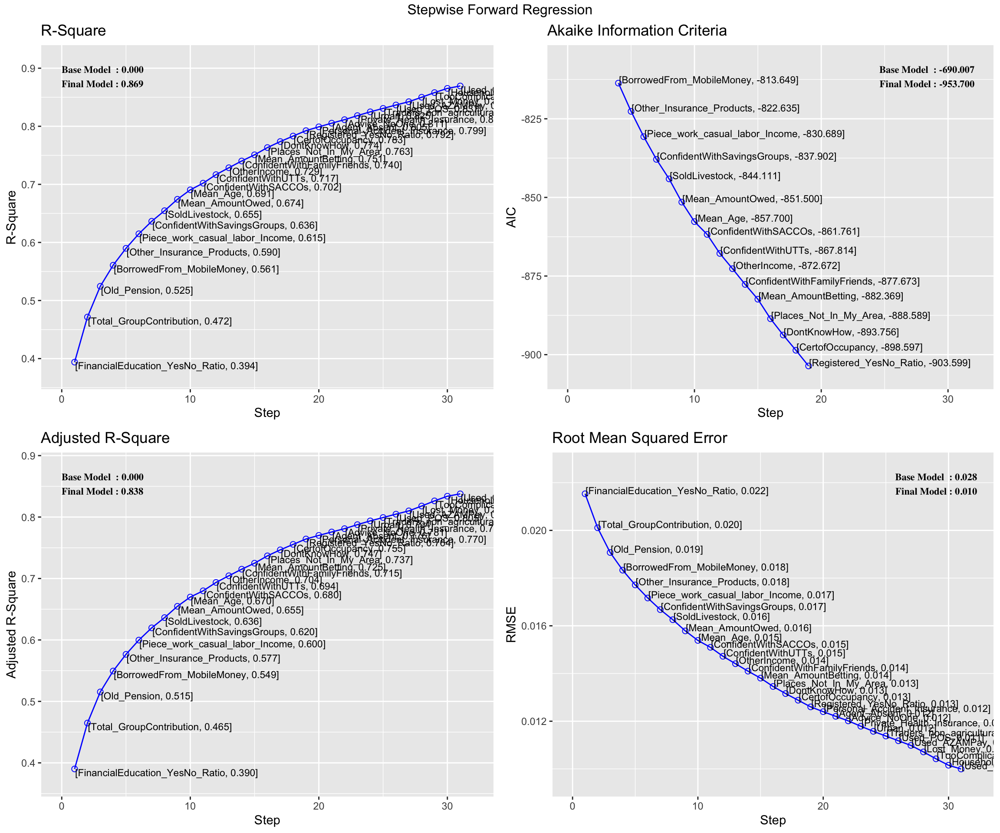
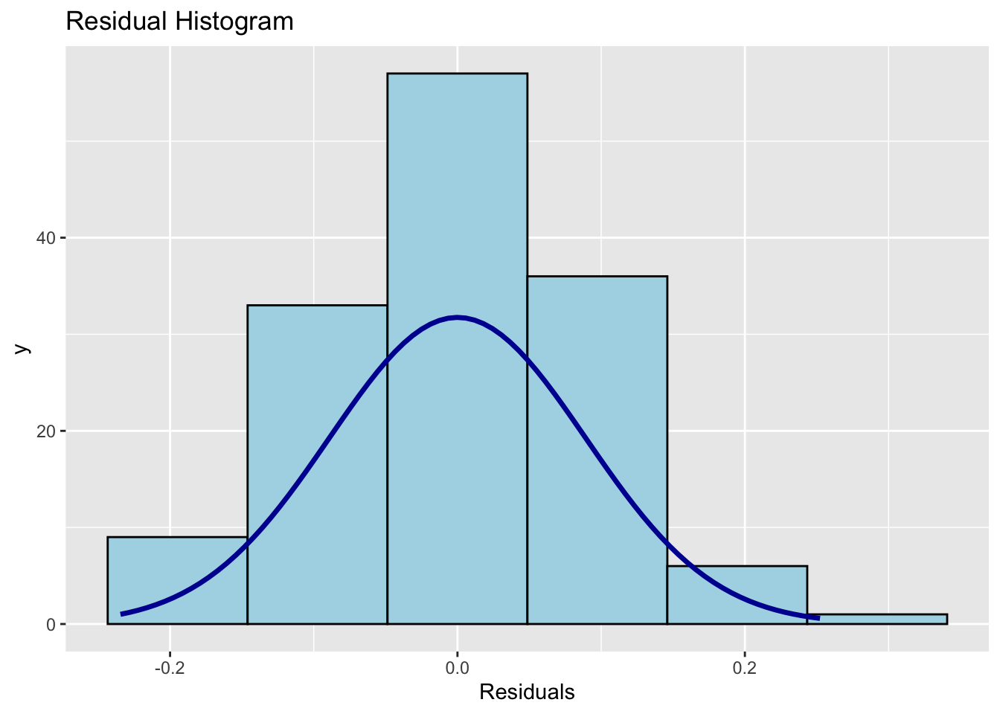

pacman::p_load(st,olsrr, ggstatsplot, ggpubr, sf, spdep, sfdep, GWmodel, tmap, tidyverse, gtsummary,see,performance,datawizard)Take Home Exercise 3: Modelling Geography of Financial Inclusion in Tanzania with Geographically Weighted Methods
1 Overview
1.1 Background
Financial inclusion plays a key role in promoting equitable economic growth by enabling individuals and businesses to access essential financial services such as banking, loans, insurance, and equity products. In Tanzania, financial inclusion initiatives have become a priority in addressing the needs of underserved populations, particularly those in rural or economically disadvantaged areas. These initiatives aim to improve household incomes, reduce income inequality, and foster inclusive economic participation by providing timely and affordable access to financial products and services(United Nations Capital Development Fund [UNCDF], 2024).
Despite significant progress in financial inclusion efforts, access to financial services is uneven across different geographical regions within Tanzania. Rural areas, particularly in districts with low levels of economic activity, often face greater challenges in accessing financial services compared to more urbanized districts. These spatial disparities raise important questions about the factors driving financial inclusion at the district level and how regional policies can be designed to promote more inclusive economic outcomes.
1.2 Objectives
This analysis aims to build an explanatory model using Multiple Linear Regression as well as Geographically Weighted Regression (GWR) to identify the key factors affecting financial inclusion across districts in Tanzania. By focusing on multiple socio-economic and infrastructural variables, this study will provide insights into how these factors vary geographically and influence financial access at a district level.
Specifically, the objectives are:
Identify Key Determinants: Determine the primary socio-economic and infrastructural factors that influence financial inclusion, such as income levels, education, proximity to financial institutions, and mobile money adoption.
Examine Regional Variation: Explore how the effects of these factors vary across different districts, providing a localized understanding of financial inclusion.
2 Methodology
The explanatory model will be developed first using Multiple Linear Regression and Geographically Weighted Regression (GWR), which is a spatial extension of multiple linear regression that allows for localized variations in the relationships between predictors and the response variable—in this case, financial inclusion.
The process will follow these steps:
Defining dependent variable (y): Derive dependent variable which represents financial inclusion from the FinScope dataset.
Explanatory Variable Selection (x): Identify key predictor variables, both continuous and categorical, from the FinScope dataset, such as income levels, education and mobile money adoption. These will serve as explanatory variables in the model.
Model Building: Build the explanatory model using multiple linear regression techniques, enhanced by GWR to account for geographical variations. This will allow us to evaluate the influence of each predictor on financial inclusion across different districts.
Model Calibration and Validation: Calibrate the model to ensure that it effectively captures the localized relationships between financial inclusion and its determinants.
Spatial Visualization: Mapping the results of the GWR model to visualize how the effects of each factor vary geographically, will highlight districts where specific variables have a stronger or weaker influence on financial inclusion.
3 Loading R Packages
The following packages were used for this study:
| Package | Description |
|---|---|
| st | For displaying summary statistics |
| olsrr | For creating and evaluating ordinary least squares regression models. |
| ggstatsplot | for producing statistical visualizations that combine ggplot2 graphics with statistical results |
| ggpubr | To create publication-ready visualizations with ggplot2 and arranging multiple plots |
| sf | For importing, managing, and handling geospatial data |
| sfdep | To analyze spatial relationships and incorporate them into regression models |
| spdep | For calculating spatial weights and conducting tests for spatial relationships |
| GWmodel | To explore spatially varying relationships between the dependent and independent variables |
| tmap | For thematic mapping, allowing us to visualize spatial data in an intuitive and aesthetically pleasing manner |
| tidyverse | For data manipulation, cleaning, and visualization |
| gtsummary | To create summary tables for regression results, providing a clear and concise presentation of model outputs |
| see | For visualizing model diagnostics and results |
| performance | For evaluating model performance and diagnostics |
| datawizard | To handle missing values, recode variables, and perform exploratory data analysis before modeling |
4 Importing the Data
4.1 The Datasets
For this analysis, we will use two primary datasets: (1) FinScope Tanzania 2023, which provides district-level data on financial inclusion, and (2) district-level boundary GIS data from the geoBoundaries portal to facilitate spatial analysis.
FinScope Tanzania 2023: This dataset include comprehensive district-level data on access to financial services, covering indicators such as banking services, mobile money usage, savings, loans, and insurance. The dataset will be used to identify the key factors affecting financial inclusion and to develop the explanatory model.
District Boundary GIS Data: Geographic boundary data for the districts of Tanzania, sourced from the geoBoundaries, will enable us to link the financial inclusion data to specific geographic locations for spatial analysis using GWR.
4.2 Aspatial Data
The FinScope Tanzania dataset from 2023, was imported by using read_csv() package.
Then, the data was prepared for analysis with the following steps:
- We extract the columns with the variables chosen which will be explained in the Variable Selection section
Rename some district names to match the boundary dataset in section 4.3.
Remove columns with all missing/NA values.
tanzania <- read_csv("data/rawdata/FinScope_Tanzania.csv") %>%
select(5, 9, 11, 13:14,16, 65:67, 95:103, 107:119, 125,
140, 142:151, 160:174, 177:178, 180, 183:192, 196, 215:223,
275:278, 294:306, 344:353, 361:372, 374:378, 395:397, 455:460,
495, 497, 507:529, 574:580, 591, 612, 650:651, 653, 655, 657,
678, 680:685, 697:698, 702:716, 718) %>%
mutate(dist_name = ifelse(dist_name == "Magharibi A", "Magharibi", dist_name),
dist_name = ifelse(dist_name == "Magharibi B", "Magharibi", dist_name),
dist_name = ifelse(dist_name == "Nyang'hwale", "Nyanghwale", dist_name),
dist_name = ifelse(dist_name == "Wanging'ombe", "Wangingombe", dist_name))%>%
select(where(~ !all(is.na(.))))We will use glimpse() to quickly check the attributes.
glimpse(tanzania)Lastly, we will save the prepared dataframe into rds format.
write_rds(tanzania, "data/rds/tanzania.rds")tanzania <- read_rds("data/rds/tanzania.rds")4.3 Geospatial Data - Study Area
The geo Boundaries of Tanzania dataset, was imported by using st_read() package.
The dataset was prepared for analysis with the following steps:
We note that Tanzania is in WGS 84/ UTM Zone 37S. We will use st_transform to reproject coordinate reference system to EPSG: 32737 for Tanzania.
To perform left join with the aspatial dataset, we need a common column - districts name. Therefore, we need to change the variable, shapeName, to ‘dist_name’ to make it a common variable with the FinScope Tanzania dataset.
To ensure the districts are common, some districts will be renamed from “Arusha Urban” to “Arusha” as the same way it was displayed in FinScope Tanzania dataset. Since the FinScope Tanzania dataset already have a variable that classifies if the surveyee is residing in an urban or rural area, we do not need to have a separate district with the title Urban as it falls under the same district.
We will also remove some district names that are not present in the FinScope Tanzania dataset.
tanzbounds <- st_read(dsn = "data/rawdata/",
layer = "geoBoundaries-TZA-ADM2",
crs=4326) %>%
st_transform(crs=32737) %>%
rename(dist_name = shapeName) %>%
mutate(dist_name = ifelse(dist_name == "Arusha Urban", "Arusha", dist_name)) %>%
mutate(dist_name = ifelse(dist_name == "Meru", "Arumeru", dist_name)) %>%
mutate(dist_name = ifelse(dist_name == "Iringa Urban","Iringa", dist_name)) %>%
mutate(dist_name = ifelse(dist_name == "Bukoba Urban", "Bukoba", dist_name)) %>%
mutate(dist_name = ifelse(dist_name == "Mpanda Urban", "Mpanda", dist_name)) %>%
mutate(dist_name = ifelse(dist_name == "Kigoma Urban", "Kigoma", dist_name)) %>%
mutate(dist_name = ifelse(dist_name == "Moshi Urban", "Moshi", dist_name))%>%
mutate(dist_name = ifelse(dist_name == "Lindi Urban", "Lindi", dist_name))%>%
mutate(dist_name = ifelse(dist_name == "Musoma Urban", "Musoma", dist_name))%>%
mutate(dist_name = ifelse(dist_name == "Mbeya Urban", "Mbeya", dist_name)) %>%
mutate(dist_name = ifelse(dist_name == "Babati UrbanBabati Urban", "Babati", dist_name)) %>%
mutate(dist_name = ifelse(dist_name == "Dodoma Urban", "Dodoma", dist_name))%>%
mutate(dist_name = ifelse(dist_name == "Kibaha Urban", "Kibaha", dist_name))%>%
mutate(dist_name = ifelse(dist_name == "Morogoro Urban", "Morogoro", dist_name))%>%
mutate(dist_name = ifelse(dist_name == "Mtwara Urban", "Mtwara", dist_name))%>%
mutate(dist_name = ifelse(dist_name == "Njombe Urban", "Njombe", dist_name))%>%
mutate(dist_name = ifelse(dist_name == "Mtwara Urban", "Mtwara", dist_name))%>%
mutate(dist_name = ifelse(dist_name == "Shinyanga Urban", "Shinyanga", dist_name))%>%
mutate(dist_name = ifelse(dist_name == "Singida Urban", "Singida", dist_name))%>%
mutate(dist_name = ifelse(dist_name == "Songea Urban", "Songea", dist_name))%>%
mutate(dist_name = ifelse(dist_name == "Sumbawanga Urban", "Sumbawanga", dist_name))%>%
mutate(dist_name = ifelse(dist_name == "Tabora Urban", "Tabora", dist_name))%>%
mutate(dist_name = ifelse(dist_name == "Tanga Urban", "Tanga", dist_name)) %>%
mutate(dist_name = ifelse(dist_name == "Nyang'hwale", "Nyanghwale", dist_name)) %>%
mutate(dist_name = ifelse(dist_name == "Wanging'ombe", "Wangingombe", dist_name)) %>%
mutate(dist_name = ifelse(dist_name == "Butiam", "Butiama", dist_name)) %>%
filter(!dist_name %in% c("Mafinga Township Authority", "Kasulu Township Authority", "Masasi Township Authority" , "Makambako Township Authority", "Kahama Township Authority", "Korogwe Township Authority", "Handeni Mji","Mafia","Tunduma","Korogwe")) %>%
select (-c("shapeISO","shapeID","shapeGroup","shapeType"))Reading layer `geoBoundaries-TZA-ADM2' from data source
`/Users/seesarhlakyi/Desktop/ssrhk/ISSS626-GAA/Take-home_Ex/Take-home_Ex03/data/rawdata'
using driver `ESRI Shapefile'
Simple feature collection with 170 features and 5 fields
Geometry type: MULTIPOLYGON
Dimension: XY
Bounding box: xmin: 29.58953 ymin: -11.76235 xmax: 40.44473 ymax: -0.983143
Geodetic CRS: WGS 84To ensure the study area is in the correct format, we will use st_crs to check.
st_crs(tanzbounds)Coordinate Reference System:
User input: EPSG:32737
wkt:
PROJCRS["WGS 84 / UTM zone 37S",
BASEGEOGCRS["WGS 84",
ENSEMBLE["World Geodetic System 1984 ensemble",
MEMBER["World Geodetic System 1984 (Transit)"],
MEMBER["World Geodetic System 1984 (G730)"],
MEMBER["World Geodetic System 1984 (G873)"],
MEMBER["World Geodetic System 1984 (G1150)"],
MEMBER["World Geodetic System 1984 (G1674)"],
MEMBER["World Geodetic System 1984 (G1762)"],
MEMBER["World Geodetic System 1984 (G2139)"],
ELLIPSOID["WGS 84",6378137,298.257223563,
LENGTHUNIT["metre",1]],
ENSEMBLEACCURACY[2.0]],
PRIMEM["Greenwich",0,
ANGLEUNIT["degree",0.0174532925199433]],
ID["EPSG",4326]],
CONVERSION["UTM zone 37S",
METHOD["Transverse Mercator",
ID["EPSG",9807]],
PARAMETER["Latitude of natural origin",0,
ANGLEUNIT["degree",0.0174532925199433],
ID["EPSG",8801]],
PARAMETER["Longitude of natural origin",39,
ANGLEUNIT["degree",0.0174532925199433],
ID["EPSG",8802]],
PARAMETER["Scale factor at natural origin",0.9996,
SCALEUNIT["unity",1],
ID["EPSG",8805]],
PARAMETER["False easting",500000,
LENGTHUNIT["metre",1],
ID["EPSG",8806]],
PARAMETER["False northing",10000000,
LENGTHUNIT["metre",1],
ID["EPSG",8807]]],
CS[Cartesian,2],
AXIS["(E)",east,
ORDER[1],
LENGTHUNIT["metre",1]],
AXIS["(N)",north,
ORDER[2],
LENGTHUNIT["metre",1]],
USAGE[
SCOPE["Engineering survey, topographic mapping."],
AREA["Between 36°E and 42°E, southern hemisphere between 80°S and equator, onshore and offshore. Kenya. Mozambique. Tanzania."],
BBOX[-80,36,0,42]],
ID["EPSG",32737]]Now we are ready to save the dataset.
write_rds(tanzbounds, "data/rds/tanzbounds.rds")tanzbounds<- read_rds("data/rds/tanzbounds.rds")5 Data Wrangling of Variables
In the development of a multiple linear regression model, the selection of appropriate variables is critical to ensuring the model’s accuracy and interpretability. This section focuses on the selection of both categorical and continuous variables that will serve as predictors in our regression analysis.
Initially, we will establish a preliminary set of variables based on theoretical foundations and previous empirical research from the 722 variables of FinScope Tanzania dataset.
5.1 Categorical Variables
We will employ one-hot encoding to transform categorical variables into a format suitable for regression modeling. One-hot encoding allows us to create binary columns for each category, enabling the regression model to assess the impact of each nominal variable effectively. This approach ensures that we capture the distinct effects of categorical factors on the dependent variable while maintaining the integrity of the data.
Before we further prepare our variables, we will convert the column names into a more R-friendly format using make.names().
colnames(tanzania) <- make.names(colnames(tanzania))We will use the following variables and code chunk to one-hot encode all the nominal variables as mentioned above. Some one hot encoded columns will be used to derive continuous variables as well.
| Variable | Justification for Selection | Modification |
|---|---|---|
| Cluster type | To understand if there are any inequality across urban and rural areas | Encoded as two columns - ‘Urban’ and ‘Rural’ If respondent indicates ‘urban’, this variable will be 1 and 0 for rural. |
| Respondent gender | To understand the demographic background of respondent | Encoded as two columns - ‘male’ and ‘female’ |
| Education Background | To understand the demographic background of respondent | Encoded as eight columns - ‘NoFormalEducation’ and ‘SomePrimary’ and so on |
| Access to Mobile Phone, Internet and Laptop | To understand the socioeconomic status of respondent | Encoded as three columns - ‘MobilePhone’, ‘Internet’ and ‘Laptop’ |
| Financial Documents owned | To understand access to financial products | Encoded as ‘BankMFIStatement’,‘Lease’ and so on |
| Source of Money to Start Business | To understand access to financial support system; internal and external | Encoded as ‘MoneyforBusiness_BankLoan’ and so on |
| If Business is registered with government and if it is not, why | To understand business compliance | Encoded as two columns - ‘BusinessRegistered_Yes’ and ‘BusinessRegistered_No’ and for not registered business encoded as ‘NoTime’ or ‘NoMoney’ |
| Respondent’s main income source | To understand the socioeconomic status of respondent | Encoded as binary columns for each income type, such as Formal_sector_salaried, Traders_agriculatural_proudcts, etc. |
| Who they discuss their financial matters with | To understand social support networks | Encoded as 15 columns - ‘Advice_HouseholdMember’ and ‘Advice_Bank’ and so on. |
| What they did when they could not meet spending needs | To understand coping mechanisms | Encoded as 10 columns - ‘UsedSavings’ and ‘BorrowedFromBank’ |
| Whether respondent is comfortable with banks | To gauge trust in financial institutions | Encoded as ‘ComfortableWithBank_Yes’ and ‘ComfortableWithBank_No’ |
| Financial Education | To understand the respondent’s financial literacy | Encoded as ‘ReceivedFinancialEducation_Yes’ and ‘ReceivedFinancialEducation_No’ |
| Retirement plans | To understand future financial planning | Encoded as ‘Old_ChildrenWillTakeCareOfMe’ and ‘Old_Savings’ |
| Confidence in financial institutions | To understand perceptions of financial institutions | Encoded as “ConfidentWithBanks” and ‘ConfidentWithPensionFund’ and so on |
| If they are paying back money they owe within a year | To understand debt management | Encoded as PayingBack_Yes and PayingBack_No. |
| If they have borrowed money from any financial institutions | To understand access to credit | Encoded as binary columns for each financial institution type such as ‘BorrowedFrom_Bank’ and ‘BorrowedFrom_MFI’ |
| How often a respondent use the payment type for purchases | To understand spending habits | Encoded as binary columns for each payment type such as Used_Cash, Used_ATM, Used_CreditCard and so on. |
| Assistance from Government or NGO and problems they face receiving assistance | To understand reliance on assistance and issues | Encoded as binary columns such as ‘Basic_TASAF_Cash_Transfer ’ and ‘Money_Didnt_Come’ |
| Reporting problems regarding financial matters | To understand barriers in reporting issues | Encoded as binary columns such as ‘Do_Not_Know_Where_To_Go’ and ‘Do_Not_Think_They_Care’ |
| Confidence and Trust in Insurance Companies | To assess trust in insurance | Encoded as relevant indicators such as Trust_Insurance_Companies |
| Insurance ownership and type of insurance | To understand financial protection | Encoded as binary columns for each insurance type such as Motor_vehicle_insurance, Health_Insurance, etc. |
| If they have any issues accessing financial products | To understand barriers to access | Network_Failure and Agent_Absent |
| Access and relationship with moneylender | To understand trust and access to informal credit | Moneylender_Access and Moneylender_TreatsWell |
| If respondent is involved with a Bank, MFI, PENSION, INSURANCE, SACCO, CAPITAL Fund Managers, FORMAL INVESTMEN, CMG, INFORMAL MONEYLENDER or apart of a Social group | To assess engagement with financial institutions, microfinance, pension and so on. | Encoded as Banked and Not_Banked, MFI and Not_MFI and so on. |
tanzania_onehotencoded<- tanzania %>%
mutate(
Urban = ifelse(`Cluster.type` == "Urban", 1, 0),
Rural = ifelse(`Cluster.type` == "Rural", 1, 0)) %>%
mutate(
Male = ifelse(`C9..Respondent.gender.Interviewer.to.observe` == "Male", 1, 0),
Female = ifelse(`C9..Respondent.gender.Interviewer.to.observe` == "Female", 1, 0))%>%
mutate(
NoFormalEducation = ifelse(`C11..Highest.level.of.education.completed..Can.read.out` == "No formal education", 1, 0),
SomePrimary = ifelse(`C11..Highest.level.of.education.completed..Can.read.out` == "Some primary", 1, 0),
PrimaryCompleted = ifelse(`C11..Highest.level.of.education.completed..Can.read.out` == "Primary completed", 1, 0),
PostPrimaryTechnicalTraining = ifelse(`C11..Highest.level.of.education.completed..Can.read.out` == "Post primary technical training", 1, 0),
SomeSecondary = ifelse(`C11..Highest.level.of.education.completed..Can.read.out` == "Some secondary", 1, 0),
SecondaryCompleted_OLevel = ifelse(`C11..Highest.level.of.education.completed..Can.read.out` == "Secondary competed-O level", 1, 0),
SomeUniversityOrHigherEducation = ifelse(`C11..Highest.level.of.education.completed..Can.read.out` == "Some University or other higher education", 1, 0),
UniversityOrHigherEducationCompleted = ifelse(`C11..Highest.level.of.education.completed..Can.read.out` == "University or higher education completed", 1, 0))%>%
mutate(
MobilePhone = ifelse(`C23..Which.of.the.following.do.you.have.access..to..Mobile.phone` == "Yes", 1, 0),
Internet = ifelse(`C23..Which.of.the.following.do.you.have.access..to..Internet` == "Yes", 1, 0),
Laptop = ifelse(`C23..Which.of.the.following.do.you.have.access..to..Laptop.or.desktop.or.tablet` == "Yes", 1, 0))%>%
mutate(
BankMFIStatement = ifelse(`C27..Which.of.the.following.documents.do.you.currently.have.in.your.name..Bank.MFI.Statement`== "Yes",1,0),
Lease = ifelse(`C27..Which.of.the.following.documents.do.you.currently.have.in.your.name..Lease.rental.agreement.for.house.vehicle.`== "Yes",1,0),
Subscription = ifelse(`C27..Which.of.the.following.documents.do.you.currently.have.in.your.name..Subscription`== "Yes",1,0),
TaxIDNumber = ifelse(`C27..Which.of.the.following.documents.do.you.currently.have.in.your.name..Tax.ID.Number..TIN.`== "Yes",1,0),
InsurancePolicy = ifelse(`C27..Which.of.the.following.documents.do.you.currently.have.in.your.name..Insurance.Policy`== "Yes",1,0),
PaySlip = ifelse(`C27..Which.of.the.following.documents.do.you.currently.have.in.your.name..Pay.slip.from.employer`== "Yes",1,0),
TitleDeed = ifelse(`C27..Which.of.the.following.documents.do.you.currently.have.in.your.name..Title.deed`== "Yes",1,0),
CertofOccupancy = ifelse(`C27..Which.of.the.following.documents.do.you.currently.have.in.your.name..Certificate.of.customary.rights.of.occupancy..CCRO.`== "Yes",1,0),
InsuranceCard = ifelse(`C27..Which.of.the.following.documents.do.you.currently.have.in.your.name..Insurance.card`== "Yes",1,0)
) %>%
mutate(
MoneyforBusiness_BankLoan = ifelse(`X5b.Where.did.you.get.most.of.the.money.from.to.start.your.business.` == "Loan from bank or MFIs", 1, 0),
MoneyforBusiness_SACCOSLoan = ifelse(`X5b.Where.did.you.get.most.of.the.money.from.to.start.your.business.` == "Loan from SACCOS", 1, 0),
MoneyforBusiness_CMGSLoan = ifelse(`X5b.Where.did.you.get.most.of.the.money.from.to.start.your.business.` == "Loan from CMGs", 1, 0),
MoneyforBusiness_FamilyFriendsLoan = ifelse(`X5b.Where.did.you.get.most.of.the.money.from.to.start.your.business.` == "Loan from family/friends", 1, 0),
MoneyforBusiness_FamilyFriendsGift = ifelse(`X5b.Where.did.you.get.most.of.the.money.from.to.start.your.business.` == "Gift from family/friends", 1, 0),
MoneyforBusiness_Inheritance = ifelse(`X5b.Where.did.you.get.most.of.the.money.from.to.start.your.business.` == "From Inheritance", 1, 0),
MoneyforBusiness_SaleOfAssets = ifelse(`X5b.Where.did.you.get.most.of.the.money.from.to.start.your.business.` == "Sale of assets owned", 1, 0),
MoneyforBusiness_SavingsOrSalary = ifelse(`X5b.Where.did.you.get.most.of.the.money.from.to.start.your.business.` == "Saving/Salary", 1, 0)
) %>%
mutate(
BusinessRegistered_Yes = ifelse(`X6.4a.Is.your.business.registered.with.any.government.authority.` == "Yes", 1, 0),
BusinessRegistered_No = ifelse(`X6.4a.Is.your.business.registered.with.any.government.authority.` == "No", 1, 0)
) %>%
mutate(
'TriedButNot' = ifelse(`X6.4c.Please.tell.me.why.you.have.not.registered.this.business..Tried.but.was.not` == "Yes", 1, 0),
NoTime = ifelse(`X6.4c.Please.tell.me.why.you.have.not.registered.this.business..Don.t.have.time` == "Yes", 1, 0),
NoMoney = ifelse(`X6.4c..Why.you.have.not.registered.this.business..Dont.have.money` == "Yes", 1, 0),
TooComplicated = ifelse(`X6.4c.Please.tell.me.why.you.have.not.registered.this.business..It.is.too.complicated` == "Yes", 1, 0),
NoBenefit = ifelse(`X6.4c.Please.tell.me.why.you.have.not.registered.this.business..No.benefit` == "Yes", 1, 0),
BusinessTooSmall = ifelse(`X6.4c.Please.tell.me.why.you.have.not.registered.this.business..Business.is.too.small` == "Yes", 1, 0),
NoPayment = ifelse(`X6.4c..Why.you.have.not.registered.this.business..Don.t.want.to.pay` == "Yes", 1, 0),
DontKnowHow = ifelse(`X6.4c.Please.tell.me.why.you.have.not.registered.this.business..Dontt.know.how` == "Yes", 1, 0),
RegistrationInProcess = ifelse(`X6.4c.Please.tell.me.why.you.have.not.registered.this.business..Registration.is.being.processed` == "Yes", 1, 0))%>%
mutate(
Formal_sector_salaried = ifelse(Main.Income.Source == "Formal sector salaried", 1, 0),
Informal_sector_salaried = ifelse(Main.Income.Source == "Informal sector salaried", 1, 0),
Farmers_and_fishers_Inncome = ifelse(Main.Income.Source == "Farmers and fishers", 1, 0),
Traders_agricultural_products_Income = ifelse(Main.Income.Source == "Traders - agricultural products", 1, 0),
Traders_non_agricultural_Income = ifelse(Main.Income.Source == "Traders - non-agricultural", 1, 0),
Service_providers_Income = ifelse(Main.Income.Source == "Service providers", 1, 0),
Piece_work_casual_labor_Income = ifelse(Main.Income.Source == "Piece work/casual labor", 1, 0),
Rental_Income = ifelse(Main.Income.Source == "Rental income", 1, 0),
Interest_from_savings_investments_stocks_unit_trusts = ifelse(Main.Income.Source == "Interest from savings, investments, stocks, unit trusts etc.", 1, 0),
Pension_Income = ifelse(Main.Income.Source == "Pension", 1, 0),
Welfare_Income = ifelse(Main.Income.Source == "Welfare", 1, 0),
Gambling_Income = ifelse(Main.Income.Source == "Gambling", 1, 0),
Dependents_Income = ifelse(Main.Income.Source == "Dependents", 1, 0),
OtherIncome = ifelse(Main.Income.Source == "Other", 1, 0)
)%>%
mutate(
Advice_HouseholdMember = ifelse(`E.3.3..Who.do.you.talk.with.for.advice.about.money.matters..A.household.member` == "Yes", 1, 0),
Advice_FamilyMember = ifelse(`E.3.3..Who.do.you.talk.with.for.advice.about.money.matters..Another.family.member` == "Yes", 1, 0),
Advice_Employer = ifelse(`E.3.3..Who.do.you.talk.with.for.advice.about.money.matters..Employer` == "Yes", 1, 0),
Advice_Bank = ifelse(`E.3.3..Who.do.you.talk.with.for.advice.about.money.matters..Bank` == "Yes", 1, 0),
Advice_Microfinance = ifelse(`E.3.3..Who.do.you.talk.with.for.advice.about.money.matters..Microfinance.institution` == "Yes", 1, 0),
Advice_SACCOS = ifelse(`E.3.3..Who.do.you.talk.with.for.advice.about.money.matters..Savings.and.credit.cooperative..SACCOS.` == "Yes", 1, 0),
Advice_FinancialAdvisor = ifelse(`E.3.3..Who.do.you.talk.with.for.advice.about.money.matters..Financial.advisor` == "Yes", 1, 0),
Advice_FarmersAssociation = ifelse(`E.3.3..Who.do.you.talk.with.for.advice.about.money.matters..Farmers.association` == "Yes", 1, 0),
Advice_BusinessAssociation = ifelse(`E.3.3..Who.do.you.talk.with.for.advice.about.money.matters..Business.association` == "Yes", 1, 0),
Advice_SavingsGroup = ifelse(`E.3.3..Who.do.you.talk.with.for.advice.about.money.matters..Savings.group` == "Yes", 1, 0),
Advice_Moneylender = ifelse(`E.3.3..Who.do.you.talk.with.for.advice.about.money.matters..Moneylender.in.community` == "Yes", 1, 0),
Advice_GovernmentOfficial = ifelse(`E.3.3..Who.do.you.talk.with.for.advice.about.money.matters..Government.official` == "Yes", 1, 0),
Advice_VillageElder = ifelse(`E.3.3..Who.do.you.talk.with.for.advice.about.money.matters..Village.elder.elder` == "Yes", 1, 0),
Advice_OtherSpecify = ifelse(`E.3.3..Who.do.you.talk.with.for.advice.about.money.matters..Other.specify` == "Yes", 1, 0),
Advice_NoOne = ifelse(`E.3.3..Who.do.you.talk.with.for.advice.about.money.matters..I.do.not.speak.with.anyone` == "Yes", 1, 0)
)%>%
mutate(
UsedSavings = ifelse(`E.7.N.1..Last.12.months...what.did.you.do.when.you.couldn.t.meet.your.regular.spending.needs._Used.savings` == "Yes", 1, 0),
BorrowedFromBank = ifelse(`E.7.N.1..Last.12.months...what.did.you.do.when.you.couldn.t.meet.your.regular.spending.needs._Borrowed.from.a.bank.MFI.SACCO` == "Yes", 1, 0),
BorrowedThroughMM = ifelse(`E.7.N.1..Last.12.months...what.did.you.do.when.you.couldn.t.meet.your.regular.spending.needs._Borrowed.money.through.MM` == "Yes", 1, 0),
BorrowedFromMoneyLender = ifelse(`E.7.N.1..Last.12.months...what.did.you.do.when.you.couldn.t.meet.your.regular.spending.needs._Borrowed.from.money.lender` == "Yes", 1, 0),
BorrowedFromFriendFamily = ifelse(`E.7.N.1..Last.12.months...what.did.you.do.when.you.couldn.t.meet.your.regular.spending.needs._Borrowed.from.friend.family.community` == "Yes", 1, 0),
GotAssistanceFromFamily = ifelse(`E.7.N.1..Last.12.months...what.did.you.do.when.you.couldn.t.meet.your.regular.spending.needs._Got.assistance.from.family.friends.community..that.I.did.not.need.to.repay.` == "Yes", 1, 0),
SoldLivestock = ifelse(`E.7.N.1..Last.12.months...what.did.you.do.when.you.couldn.t.meet.your.regular.spending.needs._Sold.livestock` == "Yes", 1, 0),
CutSpending = ifelse(`E.7.N.1..Last.12.months...what.did.you.do.when.you.couldn.t.meet.your.regular.spending.needs._Cut.spending` == "Yes", 1, 0),
WorkedMore = ifelse(`E.7.N.1..Last.12.months...what.did.you.do.when.you.couldn.t.meet.your.regular.spending.needs._Worked.more` == "Yes", 1, 0),
Others_CouldntMeetNeeds = ifelse(`E.7.N.1..Last.12.months...what.did.you.do.when.you.couldn.t.meet.your.regular.spending.needs._Others` == "Yes", 1, 0)
)%>%
mutate(
ComfortableWithBank_Yes = ifelse(`E.5.1..You.feel.comfortable.to.go.into.a.bank.or.another.financial.institution` == "TRUE", 1, 0),
ComfortableWithBank_No = ifelse(`E.5.1..You.feel.comfortable.to.go.into.a.bank.or.another.financial.institution` == "FALSE", 1, 0), ReceivedFinancialEducation_Yes = ifelse(`E.5.2..You.have.received.some.financial.education.in.your.life` == "TRUE", 1, 0),
ReceivedFinancialEducation_No = ifelse(`E.5.2..You.have.received.some.financial.education.in.your.life` == "FALSE", 1, 0),
Old_Savings = ifelse(`E.10..How.will.you.mainly.ensure.that.you.have.money.to.meet.your.needs.when.you.are.old.and.can.no.longer.work.` == "Savings", 1, 0),
Old_ChildrenWillTakeCareOfMe = ifelse(`E.10..How.will.you.mainly.ensure.that.you.have.money.to.meet.your.needs.when.you.are.old.and.can.no.longer.work.` == "Children will take care of me", 1, 0),
Old_MoneyFromFriendsRelatives = ifelse(`E.10..How.will.you.mainly.ensure.that.you.have.money.to.meet.your.needs.when.you.are.old.and.can.no.longer.work.` == "Money from friends/relatives", 1, 0),
Old_LandProperty = ifelse(`E.10..How.will.you.mainly.ensure.that.you.have.money.to.meet.your.needs.when.you.are.old.and.can.no.longer.work.` == "Land/property", 1, 0),
Old_OwnBusiness = ifelse(`E.10..How.will.you.mainly.ensure.that.you.have.money.to.meet.your.needs.when.you.are.old.and.can.no.longer.work.` == "Own business", 1, 0),
Old_RentalIncome = ifelse(`E.10..How.will.you.mainly.ensure.that.you.have.money.to.meet.your.needs.when.you.are.old.and.can.no.longer.work.` == "Rental income", 1, 0),
Old_DividendsFromShares = ifelse(`E.10..How.will.you.mainly.ensure.that.you.have.money.to.meet.your.needs.when.you.are.old.and.can.no.longer.work.` == "Dividends from shares", 1, 0),
Old_FarmingAgricultureLivestock = ifelse(`E.10..How.will.you.mainly.ensure.that.you.have.money.to.meet.your.needs.when.you.are.old.and.can.no.longer.work.` == "Farming/agriculture/livestock", 1, 0),
Old_Pension = ifelse(`E.10..How.will.you.mainly.ensure.that.you.have.money.to.meet.your.needs.when.you.are.old.and.can.no.longer.work.` == "Pension", 1, 0),
Old_InsurancePolicy = ifelse(`E.10..How.will.you.mainly.ensure.that.you.have.money.to.meet.your.needs.when.you.are.old.and.can.no.longer.work.` == "Insurance policy", 1, 0),
Old_NoPlans = ifelse(`E.10..How.will.you.mainly.ensure.that.you.have.money.to.meet.your.needs.when.you.are.old.and.can.no.longer.work.` == "Don’t know/Have no plans/Have not yet thought about how/where I would get the money for this purpose", 1, 0),
ConfidentWithBanks = ifelse(`F.3.2.1..I.will.read.for.you.a.list.of.institutions..and.pease.tell.me.which.you.feel.confident.with.SAVINGS.your.money.with._Banks` == "Yes", 1, 0),
ConfidentWithMFIs = ifelse(`F.3.2.1..I.will.read.for.you.a.list.of.institutions..and.pease.tell.me.which.you.feel.confident.with.SAVINGS.your.money.with._MFIs` == "Yes", 1, 0),
ConfidentWithSACCOs = ifelse(`F.3.2.1..I.will.read.for.you.a.list.of.institutions..and.pease.tell.me.which.you.feel.confident.with.SAVINGS.your.money.with._SACCOs` == "Yes", 1, 0),
ConfidentWithMobileMoney = ifelse(`F.3.2.1..I.will.read.for.you.a.list.of.institutions..and.pease.tell.me.which.you.feel.confident.with.SAVINGS.your.money.with._Mobile.money.operators` == "Yes", 1, 0),
ConfidentWithPensionFund = ifelse(`F.3.2.1..I.will.read.for.you.a.list.of.institutions..and.pease.tell.me.which.you.feel.confident.with.SAVINGS.your.money.with._Pension.fund` == "Yes", 1, 0),
ConfidentWithSavingsGroups = ifelse(`F.3.2.1..I.will.read.for.you.a.list.of.institutions..and.pease.tell.me.which.you.feel.confident.with.SAVINGS.your.money.with._Savings.groups.CMGs` == "Yes", 1, 0),
ConfidentWithFamilyFriends = ifelse(`F.3.2.1..I.will.read.for.you.a.list.of.institutions..and.pease.tell.me.which.you.feel.confident.with.SAVINGS.your.money.with._Family.friends` == "Yes", 1, 0),
ConfidentWithUTTs = ifelse(`F.3.2.1..I.will.read.for.you.a.list.of.institutions..and.pease.tell.me.which.you.feel.confident.with.SAVINGS.your.money.with._UTTs` == "Yes", 1, 0),
PayingBack_Yes = ifelse(`G.2.4..Have.you..in.the.past.12.months..been.paying.back.money.that.you.borrowed.` == "Yes", 1, 0),
PayingBack_No = ifelse(`G.2.4..Have.you..in.the.past.12.months..been.paying.back.money.that.you.borrowed.` == "No", 1, 0),
BorrowedFrom_Bank = ifelse(`G.5.2.Did.you.borrow.money.from.the.following..Bank` == "Yes", 1, 0),
BorrowedFrom_MFI = ifelse(`G.5.2.Did.you.borrow.money.from.the.following..Microfinance.institution.such.as` == "Yes", 1, 0),
BorrowedFrom_SACCO = ifelse(`G.5.2.Did.you.borrow.money.from.the.following..SACCOS` == "Yes", 1, 0),
BorrowedFrom_MobileMoney = ifelse(`G.5.2.Did.you.borrow.money.from.the.following..A.mobile.money.service.provider` == "Yes", 1, 0),
BorrowedFrom_PensionFund = ifelse(`G.5.2.Did.you.borrow.money.from.the.following..A.pension.fund` == "Yes", 1, 0),
BorrowedFrom_Employer = ifelse(`G.5.2.Did.you.borrow.money.from.the.following..Your.employer` == "Yes", 1, 0),
BorrowedFrom_Family_PayBack = ifelse(`G.5.2.Did.you.borrow.money.from.the.following..Family.friends.that.you.had.to.pay.back` == "Yes", 1, 0),
BorrowedFrom_Family_NoPayBack = ifelse(`G.5.2.Did.you.borrow.money.from.the.following..Family.friends.that.you.did.not.have.to.pay.back` == "Yes", 1, 0),
BorrowedFrom_SavingsGroup = ifelse(`G.5.2.Did.you.borrow.money.from.the.following..Savings.group` == "Yes", 1, 0),
BorrowedFrom_CommunityLender = ifelse(`G.5.2.Did.you.borrow.money.from.the.following..Someone.in.the.community.who.lend` == "Yes", 1, 0),
BorrowedFrom_OtherSource = ifelse(`G.5.2.Did.you.borrow.money.from.the.following..Did.you.borrow.money.from.another.source` == "Yes", 1, 0),
Used_Cash = ifelse(`X2.1.In.the.past.12.months..how.often.did.you.use.the.Cash.for.purchases.of.goods` == "Yes", 1, 0),
Used_ATM_DebitCard = ifelse(`X2.2.In.the.past.12.months..how.often.did.you.use.the.ATM...Debit.card.for.purchases.of.goods` == "Yes", 1, 0),
Used_Cash = ifelse(`X2.1.In.the.past.12.months..how.often.did.you.use.the.Cash.for.purchases.of.goods` == "Never", 0, 1),
Used_ATM_DebitCard = ifelse(`X2.2.In.the.past.12.months..how.often.did.you.use.the.ATM...Debit.card.for.purchases.of.goods` == "Never", 0, 1),
Used_CreditCard = ifelse(`X2.3.In.the.past.12.months..how.often.did.you.use.the.Credit.card.for.purchases.of.goods` == "Never", 0, 1),
Used_BankTransfer = ifelse(`X2.4.In.the.past.12.months..how.often.did.you.use.the.Bank.transfer.for.purchases.of.goods` == "Never", 0, 1),
Used_MobileMoney = ifelse(`X2.5.In.the.past.12.months..how.often.did.you.use.the.Mobile.money.for.purchases.of.goods` == "Never", 0, 1),
Used_Cryptocurrency = ifelse(`X2.6.In.the.past.12.months..how.often.did.you.use.the.Cryptocurrency.for.purchases.of.goods` == "Never", 0, 1),
Used_QR_Code = ifelse(`X3.1.In.the.past.12.months..how.often.did.you.use.the.QR.code..for.purchases.of.goods` == "Never", 0, 1),
Used_POS = ifelse(`X3.2.In.the.past.12.months..how.often.did.you.use.the.POS.for.purchases.of.goods` == "Never", 0, 1),
Used_LipaNamba = ifelse(`X3.3.In.the.past.12.months..how.often.did.you.use.the.Lipa.Namba.for.purchases.of.goods` == "Never", 0, 1),
Used_AZAMPay = ifelse(`X3.4.In.the.past.12.months..how.often.did.you.use.the.AZAM.Pay.for.purchases.of.goods` == "Never", 0, 1),
Basic_TASAF_Cash_Transfer = ifelse(`X1..You.indicated.earlier.that.you.get.assistance.from.Government.or.NGO..please.tell.me.which...Basic.TASAF.cash.transfer` == "Yes", 1, 0),
Additional_Conditional_TASAF_Cash_Transfer = ifelse(`X1..You.indicated.earlier.that.you.get.assistance.from.Government.or.NGO..please.tell.me.which...Additional.Conditional.TASAF.cash.transfer` == "Yes", 1, 0),
Pension_for_Elders = ifelse(`X1..You.indicated.earlier.that.you.get.assistance.from.Government.or.NGO..please.tell.me.which...Pension.for.elders..Znz.only.` == "Yes", 1, 0),
Others_Assistance = ifelse(`X1..You.indicated.earlier.that.you.get.assistance.from.Government.or.NGO..please.tell.me.which...Others` == "Yes", 1, 0),
Payment_Was_Late = ifelse(`X2.Please.tell.me.which.of.the.following.problems.do.you.experience.with.these.payments._Payment.was.late` == "Yes", 1, 0),
Gave_Money_To_Official = ifelse(`X2.Please.tell.me.which.of.the.following.problems.do.you.experience.with.these.payments._You.had.to.give.money.to.an.official` == "Yes", 1, 0),
Money_Didnt_Come = ifelse(`X2.Please.tell.me.which.of.the.following.problems.do.you.experience.with.these.payments._Money.didn.t.come.at.all` == "Yes", 1, 0),
Received_Less_Money = ifelse(`X2.Please.tell.me.which.of.the.following.problems.do.you.experience.with.these.payments._You.received.less.money.than.should.have` == "Yes", 1, 0),
Household_Not_On_Register = ifelse(`X2.Please.tell.me.which.of.the.following.problems.do.you.experience.with.these.payments._Your.household.not.on.the.register` == "Yes", 1, 0),
Unable_To_Collection_Point = ifelse(`X2.Please.tell.me.which.of.the.following.problems.do.you.experience.with.these.payments._You.were.not.able.to.go.to.the.collection.point.and.you.didn.t.get.the.payment` == "Yes", 1, 0),
No_Proof_Of_Identity = ifelse(`X2.Please.tell.me.which.of.the.following.problems.do.you.experience.with.these.payments._You.didn.t.have.proof.of.identity.and.didn.t.g.et.the.money` == "Yes", 1, 0),
Do_Not_Know_Where_To_Go = ifelse(`J1.7.Why.don.t.you.report.problems..I.do.not.know.where.to.go` == "Yes", 1, 0),
Places_Not_In_My_Area = ifelse(`J1.7.Why.don.t.you.report.problems..The.places.are.not.in.my.area` == "Yes", 1, 0),
Do_Not_Think_They_Care = ifelse(`J1.7.Why.don.t.you.report.problems..I.do.not.think.they.care.about` == "Yes", 1, 0),
Trust_Insurance_Companies = ifelse(`X1.3.Please.tell.me.which.of.the.following.you.is.true.for.you...You.trust.insurance.companies.to.pay.out.when.something.does.go.wrong` == "Yes", 1, 0),
Insurance_Good_Idea = ifelse(`X1.3.Please.tell.me.which.of.the.following.you.is.true.for.you...Insurance.is.a.good.idea.for.everyone` == "Yes", 1, 0),
Need_Insurance = ifelse(`X1.3.Please.tell.me.which.of.the.following.you.is.true.for.you...You.don.t.need.insurance.as.you.get.money.if.things.go.wrong` == "Yes", 1, 0),
Have_Insurance_Cover = ifelse(`X2.Do.you.have.insurance.cover.` == "Yes", 1, 0),
Motor_Vehicle_Insurance = ifelse(`X3.1.1.Please.tell.me.which.of.the.following.you.have..Motor.vehicle.insurance` == "Yes", 1, 0),
Households_Contents_Insurance = ifelse(`X3.1.1.Please.tell.me.which.of.the.following.you.have..Households.contents.insura` == "Yes", 1, 0),
Private_Health_Insurance = ifelse(`X3.1.1.Please.tell.me.which.of.the.following.you.have..Private.health.insurance` == "Yes", 1, 0),
National_Health_Insurance = ifelse(`X3.1.1.Please.tell.me.which.of.the.following.you.have..National.health.insurance` == "Yes", 1, 0),
Community_Health_Insurance = ifelse(`X3.1.1.Please.tell.me.which.of.the.following.you.have..Community.health.insurance` == "Yes", 1, 0),
TIKA_Insurance = ifelse(`X3.1.1.Please.tell.me.which.of.the.following.you.have..TIKA..Tiba.Kwa.Kadi.` == "Yes", 1, 0),
Social_Health_Insurance = ifelse(`X3.1.1.Please.tell.me.which.of.the.following.you.have..Social.Health.Insurance.Be` == "Yes", 1, 0),
Personal_Accident_Insurance = ifelse(`X3.1.1.Please.tell.me.which.of.the.following.you.have..Personal.accident.insuranc` == "Yes", 1, 0),
Life_Insurance = ifelse(`X3.1.1.Please.tell.me.which.of.the.following.you.have..Life.insurance` == "Yes", 1, 0),
Loan_Insurance = ifelse(`X3.1.1.Please.tell.me.which.of.the.following.you.have..Loan.insurance.in.case.of` == "Yes", 1, 0),
Building_Insurance = ifelse(`X3.1.1.Please.tell.me.which.of.the.following.you.have..Building.insurance` == "Yes", 1, 0),
Education_Policy = ifelse(`X3.1.1.Please.tell.me.which.of.the.following.you.have..Education.policy` == "Yes", 1, 0),
Funeral_Cover = ifelse(`X3.1.1.Please.tell.me.which.of.the.following.you.have..Funeral.cover` == "Yes", 1, 0),
Agricultural_Insurance = ifelse(`X3.1.1.Please.tell.me.which.of.the.following.you.have..Agricultural.insurance` == "Yes", 1, 0),
Ushirika_Afya = ifelse(`X3.1.1.Please.tell.me.which.of.the.following.you.have..Ushirika.afya` == "Yes", 1, 0),
Motorcycle_Insurance = ifelse(`X3.1.1.Please.tell.me.which.of.the.following.you.have..Motorcycle.insurance` == "Yes", 1, 0),
Livestock_Insurance = ifelse(`X3.1.1.Please.tell.me.which.of.the.following.you.have..Livestock.insurance` == "Yes", 1, 0),
Other_Insurance_Products = ifelse(`X3.1.1.Please.tell.me.which.of.the.following.you.have..Any.other.insurance.produc` == "Yes", 1, 0),
Network_Failure = ifelse(`X10.1.In.the.past.12.months.have.you.experienced.any.of.the.following.when.you.wanted.to.use.mobile.money._Network.failure` == "Yes", 1, 0),
Agent_Absent = ifelse(`X10.1.In.the.past.12.months.have.you.experienced.any.of.the.following.when.you.wanted.to.use.mobile.money._Agent.absent.not.available` == "Yes", 1, 0),
Agent_No_Cash_Float = ifelse(`X10.1.In.the.past.12.months.have.you.experienced.any.of.the.following.when.you.wanted.to.use.mobile.money._Agent.didn.t.have.enough.cash.float` == "Yes", 1, 0),
Agent_Overcharged = ifelse(`X10.1.In.the.past.12.months.have.you.experienced.any.of.the.following.when.you.wanted.to.use.mobile.money._Agent.overcharged.for.transactions` == "Yes", 1, 0),
Lost_Money = ifelse(`X10.1.In.the.past.12.months.have.you.experienced.any.of.the.following.when.you.wanted.to.use.mobile.money._Lost.money` == "Yes", 1, 0),
Agent_Requested_PIN = ifelse(`X10.1.In.the.past.12.months.have.you.experienced.any.of.the.following.when.you.wanted.to.use.mobile.money._Agent.wanted.you.to.reveal.your.PIN.number` == "Yes", 1, 0),
Other_Problems = ifelse(`X10.1.In.the.past.12.months.have.you.experienced.any.of.the.following.when.you.wanted.to.use.mobile.money._Any.other.problem` == "Yes", 1, 0),
Moneylender_Access = ifelse(`X4b.Please.tell.me.which.of.the.following.statements.you.agree.with..You.can.use.or.access.your.moneylender.whenever.you.need.to` == "Yes", 1, 0),
Moneylender_TreatsWell = ifelse(`X4b.Please.tell.me.which.of.the.following.statements.you.agree.with..Your.moneylender.always.treats.you.well` == "Yes", 1, 0),
Moneylender_InfoClear = ifelse(`X4b.Please.tell.me.which.of.the.following.statements.you.agree.with..Before.you.took.out.a.loan.with.your.moneylender..you.got.as.much.info.as.needed.and.it.was.easy.to.understand` == "Yes", 1, 0),
Moneylender_NeedsMet = ifelse(`X4b.Please.tell.me.which.of.the.following.statements.you.agree.with..The.products.and.services.offered.by.your.moneylender.meets.your.financial.needs` == "Yes", 1, 0),
Moneylender_FeesReasonable = ifelse(`X4b.Please.tell.me.which.of.the.following.statements.you.agree.with..Your.moneylender.s.fees.and.charges.are.reasonable` == "Yes", 1, 0),
Moneylender_CustomerSupport = ifelse(`X4b.Please.tell.me.which.of.the.following.statements.you.agree.with..You.are.satisfied.with.your.moneylender.s.customer.support` == "Yes", 1, 0),
Banked = ifelse(Banked == "Banked", 1, 0),
MFI = ifelse(MFI == "MFI", 1, 0),
PENSION = ifelse(PENSION == "PENSION", 1, 0),
INSURANCE = ifelse(INSURANCE == "INSURANCE", 1, 0),
SACCO = ifelse(SACCO == "SACCO", 1, 0),
CAPITALM_FUND_MANAGERS = ifelse(CAPITALM_FUND_MANAGERS == "CAPITALM_FUND_MANAGERS", 1, 0),
FORM_INVESTMENTS = ifelse(FORM_INVESTMENTS == "FORM_INVESTMENTS", 1, 0),
CMG = ifelse(CMG == "CMG", 1, 0),
INFORMAL_MONEYLENDER = ifelse(INFORMAL_MONEYLENDER == "INFORMAL_MONEYLENDER", 1, 0),
SOCIAL_GROUPS = ifelse(SOCIAL_GROUPS == "SOCIAL_GROUPS", 1, 0)
) We will ensure these newly encoded variables are numeric format and all NA will be replaced by 0.
tanzania_onehotencoded <- tanzania_onehotencoded %>%
mutate_at(vars(182:191,197:373), ~ as.numeric(replace_na(., 0)))| Variable | District Level Transformation (Group by) |
|---|---|
| Cluster type | Percentage of Urban for each district ( to reduce multicollinearity in regression as Rural and Urban will add up to 1, we will only choose one out of the two) |
| Respondent gender | Percentage of Male for each district( to reduce multicollinearity in regression as Male and Female will add up to 1, we will only choose one out of the two) |
| Education Background | Sum/Count of each category for each district |
| Access to Mobile Phone, Internet and Laptop | Sum/Count of each category for each district |
| Financial Documents owned | Sum/Count of each category for each district |
| Source of Money to Start Business | Sum/Count of each category for each district |
| If Business is registered with government and if it is not, why | Percentage of Yes for each district Sum/Count of each ‘No’ category for each district |
| Respondent’s main income source | Sum/Count of each category for each district |
| Who they discuss their financial matters with | Sum/Count of each category for each district |
| What they did when they could not meet spending needs | Sum/Count of each category for each district |
| Whether respondent is comfortable with banks | Percentage of Yes for each district( to reduce multicollinearity in regression as Yes and No will add up to 1, we will only choose one out of the two) |
| Financial Education | Percentage of Yes for each district( to reduce multicollinearity in regression as Yes and No will add up to 1, we will only choose one out of the two) |
| Retirement plans | Sum/Count of each category for each district |
| Confidence in financial institutions | Sum/Count of each category for each district |
| If they are paying back money they owe within a year | Percentage of Yes for each district( to reduce multicollinearity in regression as Yes and No will add up to 1, we will only choose one out of the two) |
| If they have borrowed money from any financial institutions | Sum/Count of each category for each district |
| How often a respondent use the payment type for purchases | Sum/Count of each category for each district |
| Assistance from Government or NGO and problems they face receiving assistance | Sum/Count of each category for each district |
| Reporting problems regarding financial matters | Sum/Count of each category for each district |
| Confidence and Trust in Insurance Companies | Sum/Count of each category for each district |
| Insurance ownership and type of insurance | Sum/Count of each category for each district |
| If they have any issues accessing financial products | Sum/Count of each category for each district |
| Access and relationship with moneylender | Sum/Count of each category for each district |
| If respondent is involved with a Bank, MFI, PENSION, INSURANCE, SACCO, CAPITAL Fund Managers, FORMAL INVESTMEN, CMG, INFORMAL MONEYLENDER or apart of a Social group | Percentage of Yes for each district( to reduce multicollinearity in regression as Yes and No will add up to 1, we will only choose one out of the two) |
categorical_var <- tanzania_onehotencoded %>%
group_by(dist_name) %>%
summarise(
Urban = ifelse(
(sum(Urban, na.rm = TRUE) + sum(Rural, na.rm = TRUE)) == 0,
0,
sum(Urban, na.rm = TRUE) / (sum(Urban, na.rm = TRUE) + sum(Rural, na.rm = TRUE))
), # Percentage of Urban
Male = ifelse(
(sum(Male, na.rm = TRUE) + sum(Female, na.rm = TRUE)) == 0,
0,
sum(Male, na.rm = TRUE) / (sum(Male, na.rm = TRUE) + sum(Female, na.rm = TRUE))
), # Percentage of Male
BusinessRegistered_Yes= ifelse(
(sum(BusinessRegistered_Yes, na.rm = TRUE) + sum(BusinessRegistered_No, na.rm = TRUE)) == 0,
0,
sum(BusinessRegistered_Yes, na.rm = TRUE) /
(sum(BusinessRegistered_Yes, na.rm = TRUE) + sum(BusinessRegistered_No, na.rm = TRUE))
), # Percentage of Registered Businesses
ComfortableWithBank_Yes = ifelse(
(sum(ComfortableWithBank_Yes, na.rm = TRUE) + sum(ComfortableWithBank_No, na.rm = TRUE)) == 0,
0,
sum(ComfortableWithBank_Yes, na.rm = TRUE) /
(sum(ComfortableWithBank_Yes, na.rm = TRUE) + sum(ComfortableWithBank_No, na.rm = TRUE))
), # Percentage of Comfortable with Bank
ReceivedFinancialEducation_Yes = ifelse(
(sum(ReceivedFinancialEducation_Yes, na.rm = TRUE) + sum(ReceivedFinancialEducation_No, na.rm = TRUE)) == 0,
0,
sum(ReceivedFinancialEducation_Yes, na.rm = TRUE) /
(sum(ReceivedFinancialEducation_Yes, na.rm = TRUE) + sum(ReceivedFinancialEducation_No, na.rm = TRUE))
), # Percentage of Received Financial Education
PayingBack_Yes = ifelse(
(sum(PayingBack_Yes, na.rm = TRUE) + sum(PayingBack_No, na.rm = TRUE)) == 0,
0,
sum(PayingBack_Yes, na.rm = TRUE) /
(sum(PayingBack_Yes, na.rm = TRUE) + sum(PayingBack_No, na.rm = TRUE))
), # Percentage of Paying Back
Banked = sum(Banked, na.rm = TRUE) / n(), # Percentage of Banked
MFI = sum(MFI, na.rm = TRUE) / n(), # Percentage of MFI
PENSION = sum(PENSION, na.rm = TRUE) / n(), # Percentage of Pension
INSURANCE = sum(INSURANCE, na.rm = TRUE) / n(), # Percentage of Insurance
SACCO = sum(SACCO, na.rm = TRUE) / n(), # Percentage of SACCO
CAPITALM_FUND_MANAGERS = sum(CAPITALM_FUND_MANAGERS, na.rm = TRUE) / n(), # Percentage of CAPITALM_FUND_MANAGERS
FORM_INVESTMENTS = sum(FORM_INVESTMENTS, na.rm = TRUE) / n(), # Percentage of FORM_INVESTMENTS
CMG = sum(CMG, na.rm = TRUE) / n(), # Percentage of CMG
INFORMAL_MONEYLENDER = sum(INFORMAL_MONEYLENDER, na.rm = TRUE) / n(), # Percentage of INFORMAL_MONEYLENDER
SOCIAL_GROUPS = sum(SOCIAL_GROUPS, na.rm = TRUE) / n(), # Percentage of SOCIAL_GROUPS
NoFormalEducation = sum(NoFormalEducation, na.rm = TRUE),
SomePrimary = sum(SomePrimary, na.rm = TRUE),
PrimaryCompleted = sum(PrimaryCompleted, na.rm = TRUE),
PostPrimaryTechnicalTraining = sum(PostPrimaryTechnicalTraining, na.rm = TRUE),
SomeSecondary = sum(SomeSecondary, na.rm = TRUE),
SecondaryCompleted_OLevel = sum(SecondaryCompleted_OLevel, na.rm = TRUE),
SomeUniversityOrHigherEducation = sum(SomeUniversityOrHigherEducation, na.rm = TRUE),
UniversityOrHigherEducationCompleted = sum(UniversityOrHigherEducationCompleted, na.rm = TRUE),
MobilePhone = sum(MobilePhone, na.rm = TRUE),
Internet = sum(Laptop, na.rm = TRUE),
Laptop = sum(Laptop, na.rm = TRUE),
BankMFIStatement = sum(BankMFIStatement, na.rm = TRUE),
Subscription = sum(Subscription, na.rm = TRUE),
TaxIDNumber = sum(TaxIDNumber, na.rm = TRUE),
InsurancePolicy = sum(InsurancePolicy, na.rm = TRUE),
PaySlip = sum(PaySlip, na.rm = TRUE),
TitleDeed = sum(TitleDeed, na.rm = TRUE),
CertofOccupancy = sum(CertofOccupancy, na.rm = TRUE),
InsuranceCard = sum(InsuranceCard, na.rm = TRUE),
MoneyforBusiness_BankLoan = sum(MoneyforBusiness_BankLoan, na.rm = TRUE),
MoneyforBusiness_SACCOSLoan = sum(MoneyforBusiness_SACCOSLoan, na.rm = TRUE),
MoneyforBusiness_CMGSLoan = sum(MoneyforBusiness_CMGSLoan, na.rm = TRUE),
MoneyforBusiness_FamilyFriendsLoan = sum(MoneyforBusiness_FamilyFriendsLoan, na.rm = TRUE),
MoneyforBusiness_FamilyFriendsGift = sum(MoneyforBusiness_FamilyFriendsGift, na.rm = TRUE),
MoneyforBusiness_Inheritance = sum(MoneyforBusiness_Inheritance, na.rm = TRUE),
MoneyforBusiness_SaleOfAssets = sum(MoneyforBusiness_SaleOfAssets, na.rm = TRUE),
MoneyforBusiness_SavingsOrSalary = sum(MoneyforBusiness_SavingsOrSalary, na.rm = TRUE),
BusinessRegistered_Yes = sum(BusinessRegistered_Yes, na.rm = TRUE),
BusinessRegistered_No = sum(BusinessRegistered_No, na.rm = TRUE),
TriedButNot = sum(TriedButNot, na.rm = TRUE),
NoTime = sum(NoTime, na.rm = TRUE),
NoMoney = sum(NoMoney, na.rm = TRUE),
TooComplicated = sum(TooComplicated, na.rm = TRUE),
NoBenefit = sum(NoBenefit, na.rm = TRUE),
BusinessTooSmall = sum(BusinessTooSmall, na.rm = TRUE),
NoPayment = sum(NoPayment, na.rm = TRUE),
DontKnowHow = sum(DontKnowHow, na.rm = TRUE),
RegistrationInProcess = sum(RegistrationInProcess, na.rm = TRUE),
Formal_sector_salaried = sum(Formal_sector_salaried, na.rm = TRUE),
Informal_sector_salaried = sum(Informal_sector_salaried, na.rm = TRUE),
Farmers_and_fishers_Inncome = sum(Farmers_and_fishers_Inncome, na.rm = TRUE),
Traders_agricultural_products_Income = sum(Traders_agricultural_products_Income, na.rm = TRUE),
Traders_non_agricultural_Income = sum(Traders_non_agricultural_Income, na.rm = TRUE),
Service_providers_Income = sum(Service_providers_Income, na.rm = TRUE),
Piece_work_casual_labor_Income = sum(Piece_work_casual_labor_Income, na.rm = TRUE),
Rental_Income = sum(Rental_Income, na.rm = TRUE),
Interest_from_savings_investments_stocks_unit_trusts = sum(Interest_from_savings_investments_stocks_unit_trusts, na.rm = TRUE),
Pension_Income = sum(Pension_Income, na.rm = TRUE),
Welfare_Income = sum(Welfare_Income, na.rm = TRUE),
Gambling_Income = sum(Gambling_Income, na.rm = TRUE),
Dependents_Income = sum(Dependents_Income, na.rm = TRUE),
OtherIncome = sum(OtherIncome, na.rm = TRUE),
Advice_HouseholdMember = sum(Advice_HouseholdMember, na.rm = TRUE),
Advice_FamilyMember = sum(Advice_FamilyMember, na.rm = TRUE),
Advice_Employer = sum(Advice_Employer, na.rm = TRUE),
Advice_Bank = sum(Advice_Bank, na.rm = TRUE),
Advice_Microfinance = sum(Advice_Microfinance, na.rm = TRUE),
Advice_SACCOS = sum(Advice_SACCOS, na.rm = TRUE),
Advice_FinancialAdvisor = sum(Advice_FinancialAdvisor, na.rm = TRUE),
Advice_FarmersAssociation = sum(Advice_FarmersAssociation, na.rm = TRUE),
Advice_BusinessAssociation = sum(Advice_BusinessAssociation, na.rm = TRUE),
Advice_SavingsGroup = sum(Advice_SavingsGroup, na.rm = TRUE),
Advice_Moneylender = sum(Advice_Moneylender, na.rm = TRUE),
Advice_GovernmentOfficial = sum(Advice_GovernmentOfficial, na.rm = TRUE),
Advice_VillageElder = sum(Advice_VillageElder, na.rm = TRUE),
Advice_OtherSpecify = sum(Advice_OtherSpecify, na.rm = TRUE),
Advice_NoOne = sum(Advice_NoOne, na.rm = TRUE),
UsedSavings = sum(UsedSavings, na.rm = TRUE),
BorrowedFromBank = sum(BorrowedFromBank, na.rm = TRUE),
BorrowedThroughMM = sum(BorrowedThroughMM, na.rm = TRUE),
BorrowedFromMoneyLender = sum(BorrowedFromMoneyLender, na.rm = TRUE),
BorrowedFromFriendFamily = sum(BorrowedFromFriendFamily, na.rm = TRUE),
GotAssistanceFromFamily = sum(GotAssistanceFromFamily, na.rm = TRUE),
SoldLivestock = sum(SoldLivestock, na.rm = TRUE),
CutSpending = sum(CutSpending, na.rm = TRUE),
WorkedMore = sum(WorkedMore, na.rm = TRUE),
Others_CouldntMeetNeeds = sum(Others_CouldntMeetNeeds, na.rm = TRUE),
Old_Savings = sum(Old_Savings, na.rm = TRUE),
Old_ChildrenWillTakeCareOfMe = sum(Old_ChildrenWillTakeCareOfMe, na.rm = TRUE),
Old_MoneyFromFriendsRelatives = sum(Old_MoneyFromFriendsRelatives, na.rm = TRUE),
Old_LandProperty = sum(Old_LandProperty, na.rm = TRUE),
Old_OwnBusiness = sum(Old_OwnBusiness, na.rm = TRUE),
Old_RentalIncome = sum(Old_RentalIncome, na.rm = TRUE),
Old_DividendsFromShares = sum(Old_DividendsFromShares, na.rm = TRUE),
Old_FarmingAgricultureLivestock = sum(Old_FarmingAgricultureLivestock, na.rm = TRUE),
Old_Pension = sum(Old_Pension, na.rm = TRUE),
Old_InsurancePolicy = sum(Old_InsurancePolicy, na.rm = TRUE),
Old_NoPlans = sum(Old_NoPlans, na.rm = TRUE),
ConfidentWithBanks = sum(ConfidentWithBanks, na.rm = TRUE),
ConfidentWithMFIs = sum(ConfidentWithMFIs, na.rm = TRUE),
ConfidentWithSACCOs = sum(ConfidentWithSACCOs, na.rm = TRUE),
ConfidentWithMobileMoney = sum(ConfidentWithMobileMoney, na.rm = TRUE),
ConfidentWithPensionFund = sum(ConfidentWithPensionFund, na.rm = TRUE),
ConfidentWithSavingsGroups = sum(ConfidentWithSavingsGroups, na.rm = TRUE),
ConfidentWithFamilyFriends = sum(ConfidentWithFamilyFriends, na.rm = TRUE),
ConfidentWithUTTs = sum(ConfidentWithUTTs, na.rm = TRUE),
BorrowedFrom_Bank = sum(BorrowedFrom_Bank, na.rm = TRUE),
BorrowedFrom_MFI = sum(BorrowedFrom_MFI, na.rm = TRUE),
BorrowedFrom_SACCO = sum(BorrowedFrom_SACCO, na.rm = TRUE),
BorrowedFrom_MobileMoney = sum(BorrowedFrom_MobileMoney, na.rm = TRUE),
BorrowedFrom_PensionFund = sum(BorrowedFrom_PensionFund, na.rm = TRUE),
BorrowedFrom_Employer = sum(BorrowedFrom_Employer, na.rm = TRUE),
BorrowedFrom_Family_PayBack = sum(BorrowedFrom_Family_PayBack, na.rm = TRUE),
BorrowedFrom_Family_NoPayBack = sum(BorrowedFrom_Family_NoPayBack, na.rm = TRUE),
BorrowedFrom_SavingsGroup = sum(BorrowedFrom_SavingsGroup, na.rm = TRUE),
BorrowedFrom_CommunityLender = sum(BorrowedFrom_CommunityLender, na.rm = TRUE),
BorrowedFrom_OtherSource = sum(BorrowedFrom_OtherSource, na.rm = TRUE),
Used_Cash = sum(Used_Cash, na.rm = TRUE),
Used_ATM_DebitCard = sum(Used_ATM_DebitCard, na.rm = TRUE),
Used_CreditCard = sum(Used_CreditCard, na.rm = TRUE),
Used_MobileMoney = sum(Used_MobileMoney, na.rm = TRUE),
Used_Cryptocurrency = sum(Used_Cryptocurrency, na.rm = TRUE),
Used_QR_Code = sum(Used_QR_Code, na.rm = TRUE),
Used_POS = sum(Used_POS, na.rm = TRUE),
Used_LipaNamba = sum(Used_LipaNamba, na.rm = TRUE),
Used_AZAMPay = sum(Used_AZAMPay, na.rm = TRUE),
Basic_TASAF_Cash_Transfer = sum(Basic_TASAF_Cash_Transfer, na.rm = TRUE),
Additional_Conditional_TASAF_Cash_Transfer = sum(Additional_Conditional_TASAF_Cash_Transfer, na.rm = TRUE),
Pension_for_Elders = sum(Pension_for_Elders, na.rm = TRUE),
Others_Assistance = sum(Others_Assistance, na.rm = TRUE),
Payment_Was_Late = sum(Payment_Was_Late, na.rm = TRUE),
Gave_Money_To_Official = sum(Gave_Money_To_Official, na.rm = TRUE),
Money_Didnt_Come = sum(Money_Didnt_Come, na.rm = TRUE),
Received_Less_Money = sum(Received_Less_Money, na.rm = TRUE),
Household_Not_On_Register = sum(Household_Not_On_Register, na.rm = TRUE),
Unable_To_Collection_Point = sum(Unable_To_Collection_Point, na.rm = TRUE),
No_Proof_Of_Identity = sum(No_Proof_Of_Identity, na.rm = TRUE),
Do_Not_Know_Where_To_Go = sum(Do_Not_Know_Where_To_Go, na.rm = TRUE),
Places_Not_In_My_Area = sum(Places_Not_In_My_Area, na.rm = TRUE),
Do_Not_Think_They_Care = sum(Do_Not_Think_They_Care, na.rm = TRUE),
Trust_Insurance_Companies = sum(Trust_Insurance_Companies, na.rm = TRUE),
Insurance_Good_Idea = sum(Insurance_Good_Idea, na.rm = TRUE),
Need_Insurance = sum(Need_Insurance, na.rm = TRUE),
Have_Insurance_Cover = sum(Have_Insurance_Cover,na.rm = TRUE),
Motor_Vehicle_Insurance = sum(Motor_Vehicle_Insurance, na.rm = TRUE),
Households_Contents_Insurance = sum(Households_Contents_Insurance, na.rm = TRUE),
Private_Health_Insurance = sum(Private_Health_Insurance, na.rm = TRUE),
National_Health_Insurance = sum(National_Health_Insurance, na.rm = TRUE),
Community_Health_Insurance = sum(Community_Health_Insurance, na.rm = TRUE),
TIKA_Insurance = sum(TIKA_Insurance, na.rm = TRUE),
Social_Health_Insurance = sum(Social_Health_Insurance, na.rm = TRUE),
Personal_Accident_Insurance = sum(Personal_Accident_Insurance, na.rm = TRUE),
Life_Insurance = sum(Life_Insurance, na.rm = TRUE),
Loan_Insurance = sum(Loan_Insurance, na.rm = TRUE),
Building_Insurance = sum(Building_Insurance, na.rm = TRUE),
Education_Policy = sum(Education_Policy, na.rm = TRUE),
Funeral_Cover = sum(Funeral_Cover, na.rm = TRUE),
Agricultural_Insurance = sum(Agricultural_Insurance, na.rm = TRUE),
Ushirika_Afya = sum(Ushirika_Afya, na.rm = TRUE),
Motorcycle_Insurance = sum(Motorcycle_Insurance, na.rm = TRUE),
Livestock_Insurance = sum(Livestock_Insurance, na.rm = TRUE),
Other_Insurance_Products = sum(Other_Insurance_Products, na.rm = TRUE),
Network_Failure = sum(Network_Failure, na.rm = TRUE),
Agent_Absent = sum(Agent_Absent, na.rm = TRUE),
Agent_No_Cash_Float = sum(Agent_No_Cash_Float, na.rm = TRUE),
Agent_Overcharged = sum(Agent_Overcharged, na.rm = TRUE),
Lost_Money = sum(Lost_Money, na.rm = TRUE),
Agent_Requested_PIN = sum(Agent_Requested_PIN, na.rm = TRUE),
Other_Problems = sum(Other_Problems, na.rm = TRUE),
Moneylender_Access = sum(Moneylender_Access, na.rm = TRUE),
Moneylender_TreatsWell = sum(Moneylender_TreatsWell, na.rm = TRUE),
Moneylender_InfoClear = sum(Moneylender_InfoClear, na.rm = TRUE),
Moneylender_NeedsMet = sum(Moneylender_NeedsMet, na.rm = TRUE),
Moneylender_FeesReasonable = sum(Moneylender_FeesReasonable, na.rm = TRUE),
Moneylender_CustomerSupport = sum(Moneylender_CustomerSupport, na.rm = TRUE)
)5.2 Continuous Variables
The following are the continuous variables for our initial model:
| Variable | Justification for Selection | District Level (Group by) |
|---|---|---|
| Age | Age is a critical demographic variable that often influences various socio-economic outcomes. It can affect financial behaviors, access to resources, and the types of assistance individuals might require.Research indicates that younger individuals may be more inclined to take risks and invest in education or business ventures, while older individuals might focus on savings and retirement planning | Mean Age at each district |
| Amount Owed | The Amount Owed is a crucial indicator of an individual’s financial obligations and overall debt situation, which directly impacts financial inclusion and well-being. High levels of debt can signal financial distress and can limit individuals’ ability to access additional credit or financial services. Understanding the average amount owed at the district level helps identify areas where residents may be over-leveraged, affecting their financial stability and decision-making capabilities. | Mean Amount Owed at each district |
| Money Spent on Betting | Studies show that excessive gambling can lead to financial distress and lower overall financial health (Koomson et al., 2022). Lower spending may lead to better financial health and inclusion. | Mean Money Spent on Betting at each district |
| Number of Saving Groups respondent belong to | Higher participation in savings groups typically correlates with better savings rates and financial stability. Groups provide social support and financial education. | Total Number of Savings Group at each district |
| Contribution to Saving Groups | Regular contributions can lead to increased savings and financial stability, improving access to credit and financial services. | Total Contribution to Saving Groups for each district |
For these four continuous variables, we will prepare the data in the following steps:
Rename the variables
Replace NA values with 0, Except for Age (Age 0 does not make logical sense, Therefore the missing ones will be replaced with the mean_age of the whole dataset excluding NA values which is 39)
mean_age <- mean(tanzania$Age, na.rm = TRUE) mean_age[1] 39.67635Ensure they are in numeric format
Remove 3 observations that states that they belong to 150000, 16000 and 2000 social groups which are outliers.
Derive the district level variable
tanzania <- tanzania %>%
mutate(
Age = as.numeric(replace_na(as.numeric(as.character(Age)), 39)),
Amount_Owed = as.numeric(replace_na(as.numeric(as.character(G.2.6..Approximately.how.much.money.do.you.owe..in.TZS)), 0)),
Amount_Betting = as.numeric(replace_na(as.numeric(as.character(X17c.On.average..how.much.do.you.spend.on.betting.in.a.month.)), 0)),
Group_Belong = as.numeric(replace_na(as.numeric(as.character(X4.3.How.many.savings.groups.do.you.belong.to.in.total.)), 0)),
Group_Contribution = as.numeric(replace_na(as.numeric(as.character(X4.8.How.much.do.you.contribute.in.total..to.all.the.groups.you.belong..in.a.mont)), 0))) %>%
filter(!Group_Belong %in% c(150000,16000,2000))continuous_var <- tanzania %>%
group_by(dist_name) %>%
summarise(
Mean_Age = mean(Age, na.rm = TRUE),
Mean_AmountOwed = mean(Amount_Owed, na.rm = TRUE),
Mean_AmountBetting = mean(Amount_Betting, na.rm = TRUE),
Total_GroupBelong = sum(Group_Belong, na.rm = TRUE),
Total_GroupContribution = sum(Group_Contribution, na.rm = TRUE)
)We will combine the categorical and continuous variable dataframe to derive the final dataframe.
tanzania_combined <- categorical_var %>%
left_join(continuous_var, by = "dist_name")5.3 Left Join
Next, we will create a layer by left joining the geospatial dataframe (tanzbound) to the attribute dataframe (tanzania) by using left_join().
To perform a left_join(), we must ensure that there is a common column between the two. For our case, the common column is ‘dist_name’
tanzania_cleaned <- left_join(tanzbounds,tanzania_combined)We noted that the geometry column is in MULTIPOLYGON format. For GWR analysis later on, we will need point geometries to represent specific locations. Leaving the geometry as MULTIPOLYGON can negatively affect the GWR analysis, as the model requires precise locations for its local regression estimations.We will use st_centroid to find the centroid points of each district.
tanzania_cleaned$centroids <- st_centroid(tanzania_cleaned$geometry)
tanzania_cleaned <- tanzania_cleaned %>%
mutate(geometry = centroids) %>%
select(-centroids)write_rds(tanzania_cleaned,"data/rds/tanzania_cleaned")tanzania_cleaned <- read_rds("data/rds/tanzania_cleaned")We will visualize the points with tmap to ensure they are properly placed (not in water).
tmap_mode('plot')
tm_shape(tanzbounds) +
tm_polygons(col = "lightblue", border.col = "black") +
tm_shape(tanzania_cleaned$geometry) +
tm_dots(size = 0.03, col = "red") +
tm_layout(
title = "Centroids of Districts in Tanzania",
title.position = c("center", "top"),
title.size = 0.8
)
6 The Dependent Variable
6.1.1 Financial Inclusion in Tanzania
Financial inclusion refers to the process of ensuring that individuals and businesses have access to affordable and useful financial products and services that meet their needs—ranging from transactions, payments, savings, and credit to insurance. According to the World Bank, financial inclusion is a “key enabler in reducing poverty and boosting shared prosperity by providing the unbanked and underserved populations access to essential financial services” (World Bank, 2023).
A robust financial inclusion system allows individuals to manage risks, invest in education, and build sustainable livelihoods. In Tanzania, financial inclusion is especially critical for rural populations, where access to traditional banking infrastructure is limited. Many rely on informal financial services, which can hinder their ability to seize economic opportunities. The growth of digital financial services, particularly mobile money, has dramatically expanded financial inclusion across Sub-Saharan Africa, enabling millions to access financial products without needing to visit a physical bank (World Bank Group, 2024).
Despite significant progress, the uneven distribution of financial services between rural and urban areas underscores the need to examine the factors driving financial inclusion at a local level. Understanding these determinants is essential for enhancing access to financial services and fostering inclusive economic development. This study aims to derive a dependent variable representing financial inclusion from the FinScope dataset, focusing on key financial behaviors.
6.1.2 Deriving The Dependent Variable - Financial Inclusion Index
Research by Demirgüç-Kunt and Klapper (World Bank,2018) indicates that financial inclusion is multi-dimensional, encompassing access to credit, savings, and various financial services. Composite indices, such as the Global Financial Inclusion Index, often aggregate multiple financial behaviors to capture the complexity of financial inclusion.
The Financial Participation and Access Index (FPAI) is a composite measure that captures the extent of financial inclusion by aggregating various financial service utilizations across multiple sources. By averaging the proportions of individuals engaged with formal banking institutions, microfinance institutions (MFIs), pension plans, insurance products, savings and credit cooperatives (SACCOs), capital market fund managers, formal investments, community-managed groups (CMGs), informal moneylenders, and social groups, the FPAI provides a holistic view of financial participation. This comprehensive approach reflects not only access to formal financial services but also the utilization of informal financial mechanisms, which are critical for households that may be underserved by traditional banking. Therefore, the FPAI effectively represents financial inclusion as it quantifies the diversity and breadth of financial engagements within the community, highlighting both formal and informal avenues that contribute to economic resilience and stability.
\(FPAI_i=(Banked_i+MFI_i+PENSION_i+INSURANCE_i+SACCO_i+CAPITALM FUND MANAGERS_i+FORM INVESTMENTS_i+CMG_i+INFORMALMONEYLENDER_i+SOCIALGROUPS_i)/10\)
where:
\(Banked_i\) = Portion of individuals of that particular district i involved in formal banking institutions
\(MFI_i\) = Portion of individuals of that particular district i involved in MFI
\(PENSION_i\)= Portion of individuals of that particular district i involved in pension
\(INSURANCE_i\)= Portion of individuals of that particular district i involved in insurance
\(SACCO_i\)= Portion of individuals of that particular district i involved in SACCO
\(CAPITALMFUNDMANAGERS_i\)= Portion of individuals of that particular district i involved with capital fund managers
\(FORMINVESTMENT_i\)= Portion of individuals of that particular district i involved in formal investments
\(CMG_i\)= Portion of individuals of that particular district i involved in CMG
\(INFORMALMONEYLENDER_i\)= Portion of individuals of that particular district i involved with informal money lender
\(SOCIALGROUPS_I\)= Portion of individuals of that particular district i involved in social groups
tanzania_cleaned <- tanzania_cleaned %>%
mutate(FPAI = (Banked + MFI + PENSION + INSURANCE + SACCO +
CAPITALM_FUND_MANAGERS + FORM_INVESTMENTS + CMG +
INFORMAL_MONEYLENDER + SOCIAL_GROUPS) / 10)6.1.3 Dependent Variable Implications
Higher FPAI Values:
A higher FPAI indicates greater financial inclusion, suggesting that individuals have access to and utilize a diverse range of financial services. This can include formal banking, microfinance institutions (MFIs), pensions, insurance, savings and credit cooperatives (SACCOs), capital fund managers, formal investments, and social groups.
Individuals with a higher FPAI are more likely to have better financial security, increased savings, and enhanced opportunities for investment and wealth accumulation. This can also indicate a stronger ability to cope with financial shocks and increased participation in economic activities.
Lower FPAI Values:
On the other hand, a lower FPAI suggests limited access to financial services, which may reflect a higher level of financial exclusion. Individuals with lower scores may rely primarily on informal financial sources, such as informal moneylenders or social groups, which can expose them to higher risks and less favorable financial conditions.
Low FPAI values can indicate potential barriers to financial inclusion, such as lack of financial literacy, limited access to formal financial institutions, or socio-economic challenges. This can lead to vulnerability in managing financial needs, lower savings rates, and decreased investment opportunities, potentially perpetuating cycles of poverty.
7 Exploratory Data Analysis (EDA)
Exploratory Data Analysis (EDA) is a crucial step allowing us to uncover underlying patterns and identify anomalies in our cleaned dataset. EDA not only aids in formulating hypotheses but also guides feature selection and model building, ensuring that the subsequent analysis is robust and meaningful. In this section, we will explore our dataset through descriptive statistics, visualizations, and correlation analysis to derive insights that can inform our understanding of financial inclusion in Tanzania.
7.1 Descriptive Statistics and Visualizations
7.1.1 Summary Statistics of Key Variables
7.1.2 Distribution Plots
7.1.3 Boxplots
7.2 Correlation Analysis
Since we have around 207 variables chosen, it is hard to visualize a correlation matrix. Therefore we will just display the highly correlated(pairs of variables with absolute correlations greater than 0.8) with the following code chunk.
nogeom_df <- as.data.frame(st_drop_geometry(tanzania_cleaned))
cor_data <- nogeom_df %>%
select(-c(FPAI,dist_name, Banked, MFI, PENSION, INSURANCE, SACCO, CAPITALM_FUND_MANAGERS, FORM_INVESTMENTS,
CMG,INFORMAL_MONEYLENDER,SOCIAL_GROUPS,
BankMFIStatement,InsurancePolicy,InsuranceCard,BorrowedFromBank,BorrowedFrom_SACCO,BorrowedFrom_MFI,
BorrowedFrom_PensionFund,BorrowedFrom_SavingsGroup
))
cor_matrix <- cor(cor_data, use = "complete.obs")
high_correlations <- which(abs(cor_matrix) > 0.8, arr.ind = TRUE)
high_cor_df <- data.frame(
Var1 = rownames(cor_matrix)[high_correlations[, 1]],
Var2 = colnames(cor_matrix)[high_correlations[, 2]],
Correlation = cor_matrix[high_correlations]
)
high_cor_df <- high_cor_df %>%
filter(Var1 != Var2) %>%
distinct()
print(high_cor_df)The following table shows the correlation pairs and the excluded variables highlighted in blue.


The following code chunk will be used to remove the variables.
tanzania_cleaned <- tanzania_cleaned %>%
select(-c(
"Payment_Was_Late",
"BorrowedFromFriendFamily",
"GotAssistanceFromFamily",
"Insurance_Good_Idea",
"MobilePhone",
"Used_Cash",
"Agent_No_Cash_Float",
"BorrowedFrom_Family_PayBack",
"BusinessTooSmall",
"Farmers_and_fishers_Inncome",
"ConfidentWithMobileMoney",
"UsedSavings",
"WorkedMore",
"Old_NoPlans",
"SecondaryCompleted_OLevel",
"UniversityOrHigherEducationCompleted",
"Have_Insurance_Cover",
"Laptop",
"Moneylender_CustomerSupport",
"Moneylender_InfoClear",
"Moneylender_NeedsMet",
"Moneylender_TreatsWell",
"Trust_Insurance_Companies",
"Used_LipaNamba"))We will also conduct a VIF test to confirm correlation after building our first linear regression model later on.
8 Multiple Linear Regression
8.1 Initial Model
We will constructed our initial model using these variables and conduct a comprehensive model assessment to evaluate its performance. This will involve calculating the Variance Inflation Factor (VIF) to assess multicollinearity among the independent variables. High VIF values indicate potential redundancy among variables, which can compromise the model’s reliability. We will then refine our variable selection by identifying and retaining only those variables that significantly contribute to explaining the variance in our dependent variable, financial inclusion.
tanzania.mlr <- lm(FPAI ~ Mean_Age + Mean_AmountOwed + Mean_AmountBetting + Total_GroupBelong +
Total_GroupContribution+ Urban + Male + BusinessRegistered_Yes + ComfortableWithBank_Yes +SomeUniversityOrHigherEducation+
ReceivedFinancialEducation_Yes + PayingBack_Yes + Internet + Subscription +
TaxIDNumber + PaySlip + TitleDeed + CertofOccupancy +
MoneyforBusiness_FamilyFriendsLoan +
MoneyforBusiness_FamilyFriendsGift + MoneyforBusiness_Inheritance +
MoneyforBusiness_SaleOfAssets + MoneyforBusiness_SavingsOrSalary +
TriedButNot + NoTime + NoMoney + TooComplicated +
NoBenefit + NoPayment + DontKnowHow + RegistrationInProcess +
Formal_sector_salaried + Informal_sector_salaried + Traders_agricultural_products_Income +
Traders_non_agricultural_Income + Service_providers_Income +
Piece_work_casual_labor_Income + Rental_Income +
Interest_from_savings_investments_stocks_unit_trusts + Pension_Income +
Welfare_Income + Gambling_Income + Dependents_Income + OtherIncome +
Advice_FamilyMember + Advice_Employer + Advice_Bank +
Advice_Microfinance + Advice_SACCOS + Advice_FinancialAdvisor +
Advice_FarmersAssociation + Advice_BusinessAssociation + Advice_SavingsGroup +
Advice_Moneylender + Advice_GovernmentOfficial + Advice_VillageElder +
Advice_OtherSpecify + Advice_NoOne + BorrowedThroughMM +
BorrowedFromMoneyLender + SoldLivestock + CutSpending + Others_CouldntMeetNeeds +
Old_Savings + Old_ChildrenWillTakeCareOfMe + Old_MoneyFromFriendsRelatives +
Old_LandProperty + Old_OwnBusiness + Old_RentalIncome + Old_DividendsFromShares +
Old_FarmingAgricultureLivestock + Old_Pension + Old_InsurancePolicy +
ConfidentWithFamilyFriends +
ConfidentWithUTTs +
BorrowedFrom_MobileMoney + BorrowedFrom_Employer +
BorrowedFrom_Family_NoPayBack +
BorrowedFrom_CommunityLender + BorrowedFrom_OtherSource + Used_ATM_DebitCard +
Used_CreditCard + Used_MobileMoney + Used_Cryptocurrency + Used_QR_Code +
Used_POS + Used_AZAMPay + Basic_TASAF_Cash_Transfer +
Additional_Conditional_TASAF_Cash_Transfer +
Money_Didnt_Come +
Received_Less_Money + Household_Not_On_Register + Unable_To_Collection_Point +
No_Proof_Of_Identity + Do_Not_Know_Where_To_Go + Places_Not_In_My_Area +
Do_Not_Think_They_Care + Education_Policy + Funeral_Cover +
Network_Failure + Agent_Absent + Agent_Overcharged + Lost_Money +
Agent_Requested_PIN + Other_Problems + Moneylender_Access + Moneylender_FeesReasonable,
data = tanzania_cleaned)summary(tanzania.mlr)
Call:
lm(formula = FPAI ~ Mean_Age + Mean_AmountOwed + Mean_AmountBetting +
Total_GroupBelong + Total_GroupContribution + Urban + Male +
BusinessRegistered_Yes + ComfortableWithBank_Yes + SomeUniversityOrHigherEducation +
ReceivedFinancialEducation_Yes + PayingBack_Yes + Internet +
Subscription + TaxIDNumber + PaySlip + TitleDeed + CertofOccupancy +
MoneyforBusiness_FamilyFriendsLoan + MoneyforBusiness_FamilyFriendsGift +
MoneyforBusiness_Inheritance + MoneyforBusiness_SaleOfAssets +
MoneyforBusiness_SavingsOrSalary + TriedButNot + NoTime +
NoMoney + TooComplicated + NoBenefit + NoPayment + DontKnowHow +
RegistrationInProcess + Formal_sector_salaried + Informal_sector_salaried +
Traders_agricultural_products_Income + Traders_non_agricultural_Income +
Service_providers_Income + Piece_work_casual_labor_Income +
Rental_Income + Interest_from_savings_investments_stocks_unit_trusts +
Pension_Income + Welfare_Income + Gambling_Income + Dependents_Income +
OtherIncome + Advice_FamilyMember + Advice_Employer + Advice_Bank +
Advice_Microfinance + Advice_SACCOS + Advice_FinancialAdvisor +
Advice_FarmersAssociation + Advice_BusinessAssociation +
Advice_SavingsGroup + Advice_Moneylender + Advice_GovernmentOfficial +
Advice_VillageElder + Advice_OtherSpecify + Advice_NoOne +
BorrowedThroughMM + BorrowedFromMoneyLender + SoldLivestock +
CutSpending + Others_CouldntMeetNeeds + Old_Savings + Old_ChildrenWillTakeCareOfMe +
Old_MoneyFromFriendsRelatives + Old_LandProperty + Old_OwnBusiness +
Old_RentalIncome + Old_DividendsFromShares + Old_FarmingAgricultureLivestock +
Old_Pension + Old_InsurancePolicy + ConfidentWithFamilyFriends +
ConfidentWithUTTs + BorrowedFrom_MobileMoney + BorrowedFrom_Employer +
BorrowedFrom_Family_NoPayBack + BorrowedFrom_CommunityLender +
BorrowedFrom_OtherSource + Used_ATM_DebitCard + Used_CreditCard +
Used_MobileMoney + Used_Cryptocurrency + Used_QR_Code + Used_POS +
Used_AZAMPay + Basic_TASAF_Cash_Transfer + Additional_Conditional_TASAF_Cash_Transfer +
Money_Didnt_Come + Received_Less_Money + Household_Not_On_Register +
Unable_To_Collection_Point + No_Proof_Of_Identity + Do_Not_Know_Where_To_Go +
Places_Not_In_My_Area + Do_Not_Think_They_Care + Education_Policy +
Funeral_Cover + Network_Failure + Agent_Absent + Agent_Overcharged +
Lost_Money + Agent_Requested_PIN + Other_Problems + Moneylender_Access +
Moneylender_FeesReasonable, data = tanzania_cleaned)
Residuals:
Min 1Q Median 3Q Max
-0.0215239 -0.0030114 0.0003081 0.0027753 0.0229111
Coefficients:
Estimate Std. Error
(Intercept) -6.908e-02 2.910e-02
Mean_Age 2.560e-03 6.226e-04
Mean_AmountOwed -9.262e-09 1.782e-08
Mean_AmountBetting 5.417e-06 1.749e-06
Total_GroupBelong 1.290e-04 2.819e-04
Total_GroupContribution 2.846e-08 2.132e-08
Urban 2.523e-02 1.136e-02
Male 1.308e-02 2.858e-02
BusinessRegistered_Yes 5.534e-03 2.978e-02
ComfortableWithBank_Yes 9.965e-03 1.430e-02
SomeUniversityOrHigherEducation 1.036e-05 2.806e-03
ReceivedFinancialEducation_Yes 4.325e-02 3.005e-02
PayingBack_Yes 1.178e-02 2.760e-02
Internet 1.777e-03 1.004e-03
Subscription -2.822e-03 1.338e-03
TaxIDNumber 3.499e-03 1.799e-03
PaySlip -3.885e-03 3.358e-03
TitleDeed 6.512e-04 8.852e-04
CertofOccupancy 1.713e-03 1.207e-03
MoneyforBusiness_FamilyFriendsLoan 2.332e-03 1.775e-03
MoneyforBusiness_FamilyFriendsGift -1.494e-03 6.229e-04
MoneyforBusiness_Inheritance 1.969e-04 5.231e-04
MoneyforBusiness_SaleOfAssets -4.919e-04 7.035e-04
MoneyforBusiness_SavingsOrSalary 8.558e-04 6.699e-04
TriedButNot -2.867e-03 5.873e-03
NoTime -8.392e-03 3.717e-03
NoMoney 5.551e-04 6.691e-04
TooComplicated 5.296e-03 1.919e-03
NoBenefit -1.434e-03 8.386e-04
NoPayment 7.316e-03 3.529e-03
DontKnowHow 9.148e-04 9.430e-04
RegistrationInProcess 4.062e-03 3.200e-03
Formal_sector_salaried 3.083e-03 2.004e-03
Informal_sector_salaried -3.247e-03 2.447e-03
Traders_agricultural_products_Income -4.146e-03 1.859e-03
Traders_non_agricultural_Income -2.901e-03 1.183e-03
Service_providers_Income -2.382e-03 1.184e-03
Piece_work_casual_labor_Income -1.149e-03 4.290e-04
Rental_Income -9.319e-03 4.414e-03
Interest_from_savings_investments_stocks_unit_trusts -1.090e-02 1.461e-02
Pension_Income -2.828e-03 5.377e-03
Welfare_Income -5.159e-03 2.803e-03
Gambling_Income 1.080e-02 9.615e-03
Dependents_Income -1.645e-03 5.115e-04
OtherIncome 5.148e-03 2.655e-03
Advice_FamilyMember -3.820e-04 4.567e-04
Advice_Employer -6.909e-03 6.941e-03
Advice_Bank 1.854e-02 7.179e-03
Advice_Microfinance -1.089e-03 2.221e-02
Advice_SACCOS 4.559e-03 1.243e-02
Advice_FinancialAdvisor 3.562e-03 1.681e-02
Advice_FarmersAssociation -2.249e-03 4.111e-03
Advice_BusinessAssociation 5.197e-03 9.837e-03
Advice_SavingsGroup -3.257e-03 5.289e-03
Advice_Moneylender -1.305e-02 1.664e-02
Advice_GovernmentOfficial -1.079e-02 1.051e-02
Advice_VillageElder 1.758e-03 4.210e-03
Advice_OtherSpecify -4.703e-03 8.240e-03
Advice_NoOne 3.743e-04 4.393e-04
BorrowedThroughMM -2.377e-03 2.158e-03
BorrowedFromMoneyLender 3.539e-03 1.655e-03
SoldLivestock 3.201e-04 4.173e-04
CutSpending 9.223e-05 3.444e-04
Others_CouldntMeetNeeds -8.227e-03 3.715e-03
Old_Savings -9.865e-04 6.727e-04
Old_ChildrenWillTakeCareOfMe 1.832e-04 7.791e-04
Old_MoneyFromFriendsRelatives 3.851e-03 2.389e-03
Old_LandProperty 6.721e-04 7.485e-04
Old_OwnBusiness 2.064e-03 9.472e-04
Old_RentalIncome -1.782e-03 3.049e-03
Old_DividendsFromShares 2.077e-03 5.564e-03
Old_FarmingAgricultureLivestock 1.904e-04 4.747e-04
Old_Pension 7.142e-03 2.958e-03
Old_InsurancePolicy -5.403e-04 2.330e-02
ConfidentWithFamilyFriends 8.421e-05 4.566e-04
ConfidentWithUTTs 4.897e-04 1.223e-03
BorrowedFrom_MobileMoney 8.621e-04 2.534e-03
BorrowedFrom_Employer 3.669e-04 1.898e-03
BorrowedFrom_Family_NoPayBack 6.811e-03 2.200e-03
BorrowedFrom_CommunityLender 6.005e-04 1.649e-03
BorrowedFrom_OtherSource 1.043e-02 5.490e-03
Used_ATM_DebitCard -4.701e-04 1.147e-03
Used_CreditCard 6.889e-04 2.494e-03
Used_MobileMoney 1.020e-03 4.740e-04
Used_Cryptocurrency 3.297e-03 3.834e-03
Used_QR_Code -2.481e-03 3.425e-03
Used_POS -4.735e-03 2.074e-03
Used_AZAMPay 2.864e-03 1.684e-03
Basic_TASAF_Cash_Transfer -1.392e-03 2.533e-03
Additional_Conditional_TASAF_Cash_Transfer 2.222e-04 2.837e-03
Money_Didnt_Come 1.490e-02 9.459e-03
Received_Less_Money -7.230e-03 5.151e-03
Household_Not_On_Register -1.103e-02 9.197e-03
Unable_To_Collection_Point -2.178e-03 1.174e-02
No_Proof_Of_Identity -2.367e-02 3.670e-02
Do_Not_Know_Where_To_Go 6.113e-04 3.503e-04
Places_Not_In_My_Area -1.771e-03 7.341e-04
Do_Not_Think_They_Care 9.336e-04 1.394e-03
Education_Policy -1.906e-02 2.575e-02
Funeral_Cover -1.286e-03 2.075e-02
Network_Failure -8.845e-04 4.498e-04
Agent_Absent 1.127e-03 6.761e-04
Agent_Overcharged -1.743e-05 1.272e-03
Lost_Money -5.859e-04 2.668e-03
Agent_Requested_PIN -4.290e-03 1.999e-03
Other_Problems -1.695e-04 5.398e-03
Moneylender_Access -3.917e-04 2.349e-03
Moneylender_FeesReasonable 2.120e-03 2.423e-03
t value Pr(>|t|)
(Intercept) -2.374 0.02132 *
Mean_Age 4.112 0.00014 ***
Mean_AmountOwed -0.520 0.60550
Mean_AmountBetting 3.097 0.00315 **
Total_GroupBelong 0.458 0.64906
Total_GroupContribution 1.335 0.18767
Urban 2.221 0.03071 *
Male 0.458 0.64904
BusinessRegistered_Yes 0.186 0.85329
ComfortableWithBank_Yes 0.697 0.48911
SomeUniversityOrHigherEducation 0.004 0.99707
ReceivedFinancialEducation_Yes 1.439 0.15606
PayingBack_Yes 0.427 0.67115
Internet 1.769 0.08277 .
Subscription -2.109 0.03981 *
TaxIDNumber 1.944 0.05727 .
PaySlip -1.157 0.25259
TitleDeed 0.736 0.46526
CertofOccupancy 1.419 0.16185
MoneyforBusiness_FamilyFriendsLoan 1.313 0.19479
MoneyforBusiness_FamilyFriendsGift -2.398 0.02009 *
MoneyforBusiness_Inheritance 0.377 0.70805
MoneyforBusiness_SaleOfAssets -0.699 0.48750
MoneyforBusiness_SavingsOrSalary 1.278 0.20710
TriedButNot -0.488 0.62753
NoTime -2.258 0.02819 *
NoMoney 0.830 0.41054
TooComplicated 2.760 0.00797 **
NoBenefit -1.710 0.09327 .
NoPayment 2.073 0.04316 *
DontKnowHow 0.970 0.33651
RegistrationInProcess 1.269 0.21003
Formal_sector_salaried 1.538 0.13002
Informal_sector_salaried -1.327 0.19040
Traders_agricultural_products_Income -2.230 0.03006 *
Traders_non_agricultural_Income -2.451 0.01763 *
Service_providers_Income -2.012 0.04940 *
Piece_work_casual_labor_Income -2.678 0.00990 **
Rental_Income -2.111 0.03957 *
Interest_from_savings_investments_stocks_unit_trusts -0.746 0.45917
Pension_Income -0.526 0.60109
Welfare_Income -1.840 0.07143 .
Gambling_Income 1.123 0.26672
Dependents_Income -3.216 0.00224 **
OtherIncome 1.939 0.05790 .
Advice_FamilyMember -0.836 0.40673
Advice_Employer -0.995 0.32415
Advice_Bank 2.582 0.01268 *
Advice_Microfinance -0.049 0.96109
Advice_SACCOS 0.367 0.71533
Advice_FinancialAdvisor 0.212 0.83305
Advice_FarmersAssociation -0.547 0.58664
Advice_BusinessAssociation 0.528 0.59955
Advice_SavingsGroup -0.616 0.54079
Advice_Moneylender -0.784 0.43643
Advice_GovernmentOfficial -1.027 0.30933
Advice_VillageElder 0.418 0.67796
Advice_OtherSpecify -0.571 0.57063
Advice_NoOne 0.852 0.39809
BorrowedThroughMM -1.102 0.27569
BorrowedFromMoneyLender 2.139 0.03717 *
SoldLivestock 0.767 0.44649
CutSpending 0.268 0.78991
Others_CouldntMeetNeeds -2.215 0.03117 *
Old_Savings -1.467 0.14853
Old_ChildrenWillTakeCareOfMe 0.235 0.81499
Old_MoneyFromFriendsRelatives 1.612 0.11302
Old_LandProperty 0.898 0.37335
Old_OwnBusiness 2.179 0.03391 *
Old_RentalIncome -0.585 0.56131
Old_DividendsFromShares 0.373 0.71053
Old_FarmingAgricultureLivestock 0.401 0.69005
Old_Pension 2.415 0.01930 *
Old_InsurancePolicy -0.023 0.98159
ConfidentWithFamilyFriends 0.184 0.85441
ConfidentWithUTTs 0.400 0.69051
BorrowedFrom_MobileMoney 0.340 0.73512
BorrowedFrom_Employer 0.193 0.84742
BorrowedFrom_Family_NoPayBack 3.095 0.00317 **
BorrowedFrom_CommunityLender 0.364 0.71726
BorrowedFrom_OtherSource 1.899 0.06311 .
Used_ATM_DebitCard -0.410 0.68345
Used_CreditCard 0.276 0.78347
Used_MobileMoney 2.151 0.03611 *
Used_Cryptocurrency 0.860 0.39373
Used_QR_Code -0.724 0.47214
Used_POS -2.284 0.02651 *
Used_AZAMPay 1.701 0.09495 .
Basic_TASAF_Cash_Transfer -0.549 0.58506
Additional_Conditional_TASAF_Cash_Transfer 0.078 0.93788
Money_Didnt_Come 1.575 0.12124
Received_Less_Money -1.404 0.16639
Household_Not_On_Register -1.199 0.23591
Unable_To_Collection_Point -0.186 0.85350
No_Proof_Of_Identity -0.645 0.52185
Do_Not_Know_Where_To_Go 1.745 0.08691 .
Places_Not_In_My_Area -2.413 0.01937 *
Do_Not_Think_They_Care 0.670 0.50591
Education_Policy -0.740 0.46237
Funeral_Cover -0.062 0.95082
Network_Failure -1.966 0.05459 .
Agent_Absent 1.667 0.10148
Agent_Overcharged -0.014 0.98912
Lost_Money -0.220 0.82702
Agent_Requested_PIN -2.146 0.03656 *
Other_Problems -0.031 0.97507
Moneylender_Access -0.167 0.86823
Moneylender_FeesReasonable 0.875 0.38571
---
Signif. codes: 0 '***' 0.001 '**' 0.01 '*' 0.05 '.' 0.1 ' ' 1
Residual standard error: 0.01139 on 52 degrees of freedom
Multiple R-squared: 0.9449, Adjusted R-squared: 0.8316
F-statistic: 8.337 on 107 and 52 DF, p-value: 4.518e-148.2 Model Assessment: olsrr method
The OLS Regression with olsrr Package is a powerful approach for calibrating multiple linear regression models, especially when dealing with a large number of predictors like in our case. The olsrr package in R provides a streamlined process for diagnosing multicollinearity issues, performing variable selection, and generating organized model assessment reports. This stage is critical for refining our initial model with __ predictors, ensuring each retained variable significantly contributes to explaining the dependent variable, the __.
ols_regress(tanzania.mlr) Model Summary
----------------------------------------------------------------
R 0.972 RMSE 0.006
R-Squared 0.945 MSE 0.000
Adj. R-Squared 0.832 Coef. Var 17.695
Pred R-Squared -Inf AIC -939.838
MAE 0.005 SBC -604.644
----------------------------------------------------------------
RMSE: Root Mean Square Error
MSE: Mean Square Error
MAE: Mean Absolute Error
AIC: Akaike Information Criteria
SBC: Schwarz Bayesian Criteria
ANOVA
-------------------------------------------------------------------
Sum of
Squares DF Mean Square F Sig.
-------------------------------------------------------------------
Regression 0.116 107 0.001 8.337 0.0000
Residual 0.007 52 0.000
Total 0.122 159
-------------------------------------------------------------------
Parameter Estimates
---------------------------------------------------------------------------------------------------------------------------------
model Beta Std. Error Std. Beta t Sig lower upper
---------------------------------------------------------------------------------------------------------------------------------
(Intercept) -0.069 0.029 -2.374 0.021 -0.127 -0.011
Mean_Age 0.003 0.001 0.308 4.112 0.000 0.001 0.004
Mean_AmountOwed 0.000 0.000 -0.048 -0.520 0.605 0.000 0.000
Mean_AmountBetting 0.000 0.000 0.233 3.097 0.003 0.000 0.000
Total_GroupBelong 0.000 0.000 0.048 0.458 0.649 0.000 0.001
Total_GroupContribution 0.000 0.000 0.190 1.335 0.188 0.000 0.000
Urban 0.025 0.011 0.250 2.221 0.031 0.002 0.048
Male 0.013 0.029 0.032 0.458 0.649 -0.044 0.070
BusinessRegistered_Yes 0.006 0.030 0.017 0.186 0.853 -0.054 0.065
ComfortableWithBank_Yes 0.010 0.014 0.056 0.697 0.489 -0.019 0.039
SomeUniversityOrHigherEducation 0.000 0.003 0.001 0.004 0.997 -0.006 0.006
ReceivedFinancialEducation_Yes 0.043 0.030 0.135 1.439 0.156 -0.017 0.104
PayingBack_Yes 0.012 0.028 0.033 0.427 0.671 -0.044 0.067
Internet 0.002 0.001 0.377 1.769 0.083 0.000 0.004
Subscription -0.003 0.001 -0.338 -2.109 0.040 -0.006 0.000
TaxIDNumber 0.003 0.002 0.394 1.944 0.057 0.000 0.007
PaySlip -0.004 0.003 -0.161 -1.157 0.253 -0.011 0.003
TitleDeed 0.001 0.001 0.102 0.736 0.465 -0.001 0.002
CertofOccupancy 0.002 0.001 0.128 1.419 0.162 -0.001 0.004
MoneyforBusiness_FamilyFriendsLoan 0.002 0.002 0.156 1.313 0.195 -0.001 0.006
MoneyforBusiness_FamilyFriendsGift -0.001 0.001 -0.287 -2.398 0.020 -0.003 0.000
MoneyforBusiness_Inheritance 0.000 0.001 0.046 0.377 0.708 -0.001 0.001
MoneyforBusiness_SaleOfAssets 0.000 0.001 -0.156 -0.699 0.488 -0.002 0.001
MoneyforBusiness_SavingsOrSalary 0.001 0.001 0.132 1.278 0.207 0.000 0.002
TriedButNot -0.003 0.006 -0.040 -0.488 0.628 -0.015 0.009
NoTime -0.008 0.004 -0.208 -2.258 0.028 -0.016 -0.001
NoMoney 0.001 0.001 0.076 0.830 0.411 -0.001 0.002
TooComplicated 0.005 0.002 0.229 2.760 0.008 0.001 0.009
NoBenefit -0.001 0.001 -0.207 -1.710 0.093 -0.003 0.000
NoPayment 0.007 0.004 0.136 2.073 0.043 0.000 0.014
DontKnowHow 0.001 0.001 0.125 0.970 0.337 -0.001 0.003
RegistrationInProcess 0.004 0.003 0.145 1.269 0.210 -0.002 0.010
Formal_sector_salaried 0.003 0.002 0.453 1.538 0.130 -0.001 0.007
Informal_sector_salaried -0.003 0.002 -0.252 -1.327 0.190 -0.008 0.002
Traders_agricultural_products_Income -0.004 0.002 -0.279 -2.230 0.030 -0.008 0.000
Traders_non_agricultural_Income -0.003 0.001 -0.515 -2.451 0.018 -0.005 -0.001
Service_providers_Income -0.002 0.001 -0.281 -2.012 0.049 -0.005 0.000
Piece_work_casual_labor_Income -0.001 0.000 -0.406 -2.678 0.010 -0.002 0.000
Rental_Income -0.009 0.004 -0.216 -2.111 0.040 -0.018 0.000
Interest_from_savings_investments_stocks_unit_trusts -0.011 0.015 -0.044 -0.746 0.459 -0.040 0.018
Pension_Income -0.003 0.005 -0.091 -0.526 0.601 -0.014 0.008
Welfare_Income -0.005 0.003 -0.220 -1.840 0.071 -0.011 0.000
Gambling_Income 0.011 0.010 0.085 1.123 0.267 -0.008 0.030
Dependents_Income -0.002 0.001 -0.632 -3.216 0.002 -0.003 -0.001
OtherIncome 0.005 0.003 0.168 1.939 0.058 0.000 0.010
Advice_FamilyMember 0.000 0.000 -0.144 -0.836 0.407 -0.001 0.001
Advice_Employer -0.007 0.007 -0.171 -0.995 0.324 -0.021 0.007
Advice_Bank 0.019 0.007 0.352 2.582 0.013 0.004 0.033
Advice_Microfinance -0.001 0.022 -0.007 -0.049 0.961 -0.046 0.043
Advice_SACCOS 0.005 0.012 0.026 0.367 0.715 -0.020 0.030
Advice_FinancialAdvisor 0.004 0.017 0.036 0.212 0.833 -0.030 0.037
Advice_FarmersAssociation -0.002 0.004 -0.041 -0.547 0.587 -0.010 0.006
Advice_BusinessAssociation 0.005 0.010 0.048 0.528 0.600 -0.015 0.025
Advice_SavingsGroup -0.003 0.005 -0.038 -0.616 0.541 -0.014 0.007
Advice_Moneylender -0.013 0.017 -0.064 -0.784 0.436 -0.046 0.020
Advice_GovernmentOfficial -0.011 0.011 -0.141 -1.027 0.309 -0.032 0.010
Advice_VillageElder 0.002 0.004 0.033 0.418 0.678 -0.007 0.010
Advice_OtherSpecify -0.005 0.008 -0.074 -0.571 0.571 -0.021 0.012
Advice_NoOne 0.000 0.000 0.169 0.852 0.398 -0.001 0.001
BorrowedThroughMM -0.002 0.002 -0.243 -1.102 0.276 -0.007 0.002
BorrowedFromMoneyLender 0.004 0.002 0.334 2.139 0.037 0.000 0.007
SoldLivestock 0.000 0.000 0.081 0.767 0.446 -0.001 0.001
CutSpending 0.000 0.000 0.061 0.268 0.790 -0.001 0.001
Others_CouldntMeetNeeds -0.008 0.004 -0.289 -2.215 0.031 -0.016 -0.001
Old_Savings -0.001 0.001 -0.320 -1.467 0.149 -0.002 0.000
Old_ChildrenWillTakeCareOfMe 0.000 0.001 0.037 0.235 0.815 -0.001 0.002
Old_MoneyFromFriendsRelatives 0.004 0.002 0.135 1.612 0.113 -0.001 0.009
Old_LandProperty 0.001 0.001 0.107 0.898 0.373 -0.001 0.002
Old_OwnBusiness 0.002 0.001 0.588 2.179 0.034 0.000 0.004
Old_RentalIncome -0.002 0.003 -0.053 -0.585 0.561 -0.008 0.004
Old_DividendsFromShares 0.002 0.006 0.041 0.373 0.711 -0.009 0.013
Old_FarmingAgricultureLivestock 0.000 0.000 0.078 0.401 0.690 -0.001 0.001
Old_Pension 0.007 0.003 0.413 2.415 0.019 0.001 0.013
Old_InsurancePolicy -0.001 0.023 -0.003 -0.023 0.982 -0.047 0.046
ConfidentWithFamilyFriends 0.000 0.000 0.044 0.184 0.854 -0.001 0.001
ConfidentWithUTTs 0.000 0.001 0.052 0.400 0.691 -0.002 0.003
BorrowedFrom_MobileMoney 0.001 0.003 0.053 0.340 0.735 -0.004 0.006
BorrowedFrom_Employer 0.000 0.002 0.017 0.193 0.847 -0.003 0.004
BorrowedFrom_Family_NoPayBack 0.007 0.002 0.414 3.095 0.003 0.002 0.011
BorrowedFrom_CommunityLender 0.001 0.002 0.055 0.364 0.717 -0.003 0.004
BorrowedFrom_OtherSource 0.010 0.005 0.130 1.899 0.063 -0.001 0.021
Used_ATM_DebitCard 0.000 0.001 -0.065 -0.410 0.683 -0.003 0.002
Used_CreditCard 0.001 0.002 0.037 0.276 0.783 -0.004 0.006
Used_MobileMoney 0.001 0.000 0.651 2.151 0.036 0.000 0.002
Used_Cryptocurrency 0.003 0.004 0.099 0.860 0.394 -0.004 0.011
Used_QR_Code -0.002 0.003 -0.087 -0.724 0.472 -0.009 0.004
Used_POS -0.005 0.002 -0.303 -2.284 0.027 -0.009 -0.001
Used_AZAMPay 0.003 0.002 0.262 1.701 0.095 -0.001 0.006
Basic_TASAF_Cash_Transfer -0.001 0.003 -0.065 -0.549 0.585 -0.006 0.004
Additional_Conditional_TASAF_Cash_Transfer 0.000 0.003 0.008 0.078 0.938 -0.005 0.006
Money_Didnt_Come 0.015 0.009 0.200 1.575 0.121 -0.004 0.034
Received_Less_Money -0.007 0.005 -0.147 -1.404 0.166 -0.018 0.003
Household_Not_On_Register -0.011 0.009 -0.082 -1.199 0.236 -0.029 0.007
Unable_To_Collection_Point -0.002 0.012 -0.019 -0.186 0.854 -0.026 0.021
No_Proof_Of_Identity -0.024 0.037 -0.116 -0.645 0.522 -0.097 0.050
Do_Not_Know_Where_To_Go 0.001 0.000 0.291 1.745 0.087 0.000 0.001
Places_Not_In_My_Area -0.002 0.001 -0.296 -2.413 0.019 -0.003 0.000
Do_Not_Think_They_Care 0.001 0.001 0.075 0.670 0.506 -0.002 0.004
Education_Policy -0.019 0.026 -0.054 -0.740 0.462 -0.071 0.033
Funeral_Cover -0.001 0.021 -0.007 -0.062 0.951 -0.043 0.040
Network_Failure -0.001 0.000 -0.373 -1.966 0.055 -0.002 0.000
Agent_Absent 0.001 0.001 0.287 1.667 0.101 0.000 0.002
Agent_Overcharged 0.000 0.001 -0.001 -0.014 0.989 -0.003 0.003
Lost_Money -0.001 0.003 -0.036 -0.220 0.827 -0.006 0.005
Agent_Requested_PIN -0.004 0.002 -0.223 -2.146 0.037 -0.008 0.000
Other_Problems 0.000 0.005 -0.003 -0.031 0.975 -0.011 0.011
Moneylender_Access 0.000 0.002 -0.041 -0.167 0.868 -0.005 0.004
Moneylender_FeesReasonable 0.002 0.002 0.132 0.875 0.386 -0.003 0.007
---------------------------------------------------------------------------------------------------------------------------------8.3 Multicollinearity - VIF
Given the large number of variables and low Adjusted R-squared, multicollinearity becomes a concern. High Variance Inflation Factor (VIF) scores indicate that some variables may be highly correlated with one another, which can distort the model’s estimates and inflate standard errors. By calculating the VIF for each predictor, we can identify those with excessive multicollinearity—typically with VIF values above 10, suggesting that they should be either removed or consolidated to improve model stability.
vif_results <- ols_vif_tol(tanzania.mlr)
high_vif <- vif_results[vif_results$VIF > 10, ]
print(high_vif) Variables Tolerance VIF
4 Total_GroupBelong 0.09589478 10.42810
5 Total_GroupContribution 0.05237501 19.09308
6 Urban 0.08364771 11.95490
10 SomeUniversityOrHigherEducation 0.04206548 23.77246
13 Internet 0.02329985 42.91873
14 Subscription 0.04113031 24.31297
15 TaxIDNumber 0.02574826 38.83757
16 PaySlip 0.05477818 18.25544
17 TitleDeed 0.05546444 18.02957
19 MoneyforBusiness_FamilyFriendsLoan 0.07510266 13.31511
20 MoneyforBusiness_FamilyFriendsGift 0.07419595 13.47783
21 MoneyforBusiness_Inheritance 0.07164974 13.95678
22 MoneyforBusiness_SaleOfAssets 0.02132427 46.89493
23 MoneyforBusiness_SavingsOrSalary 0.09941153 10.05920
28 NoBenefit 0.07254609 13.78434
30 DontKnowHow 0.06328751 15.80091
31 RegistrationInProcess 0.08129232 12.30128
32 Formal_sector_salaried 0.01220321 81.94565
33 Informal_sector_salaried 0.02927325 34.16089
34 Traders_agricultural_products_Income 0.06756265 14.80108
35 Traders_non_agricultural_Income 0.02399660 41.67257
36 Service_providers_Income 0.05413468 18.47245
37 Piece_work_casual_labor_Income 0.04599812 21.74002
40 Pension_Income 0.03560912 28.08269
41 Welfare_Income 0.07434235 13.45128
43 Dependents_Income 0.02743788 36.44597
45 Advice_FamilyMember 0.03563549 28.06192
46 Advice_Employer 0.03584904 27.89475
47 Advice_Bank 0.05687287 17.58308
48 Advice_Microfinance 0.05429443 18.41809
50 Advice_FinancialAdvisor 0.03590917 27.84804
55 Advice_GovernmentOfficial 0.05654916 17.68373
57 Advice_OtherSpecify 0.06315381 15.83436
58 Advice_NoOne 0.02680926 37.30054
59 BorrowedThroughMM 0.02184289 45.78148
60 BorrowedFromMoneyLender 0.04355194 22.96109
61 SoldLivestock 0.09604300 10.41200
62 CutSpending 0.02038026 49.06708
63 Others_CouldntMeetNeeds 0.06234936 16.03866
64 Old_Savings 0.02219109 45.06313
65 Old_ChildrenWillTakeCareOfMe 0.04229256 23.64482
67 Old_LandProperty 0.07518764 13.30006
68 Old_OwnBusiness 0.01454167 68.76789
70 Old_DividendsFromShares 0.08743931 11.43650
71 Old_FarmingAgricultureLivestock 0.02790829 35.83165
72 Old_Pension 0.03618998 27.63196
73 Old_InsurancePolicy 0.08113016 12.32587
74 ConfidentWithFamilyFriends 0.01900151 52.62740
75 ConfidentWithUTTs 0.06378778 15.67698
76 BorrowedFrom_MobileMoney 0.04429665 22.57507
78 BorrowedFrom_Family_NoPayBack 0.05930401 16.86227
79 BorrowedFrom_CommunityLender 0.04642422 21.54048
81 Used_ATM_DebitCard 0.04251006 23.52384
82 Used_CreditCard 0.05785727 17.28391
83 Used_MobileMoney 0.01156876 86.43970
84 Used_Cryptocurrency 0.07940710 12.59333
85 Used_QR_Code 0.07369924 13.56866
86 Used_POS 0.06020276 16.61053
87 Used_AZAMPay 0.04472694 22.35789
88 Basic_TASAF_Cash_Transfer 0.07585627 13.18283
89 Additional_Conditional_TASAF_Cash_Transfer 0.09126186 10.95748
90 Money_Didnt_Come 0.06595679 15.16144
91 Received_Less_Money 0.09708198 10.30057
94 No_Proof_Of_Identity 0.03270049 30.58058
95 Do_Not_Know_Where_To_Go 0.03806304 26.27221
96 Places_Not_In_My_Area 0.07020462 14.24408
97 Do_Not_Think_They_Care 0.08496325 11.76979
99 Funeral_Cover 0.07722124 12.94981
100 Network_Failure 0.02942081 33.98955
101 Agent_Absent 0.03569080 28.01843
103 Lost_Money 0.03986452 25.08496
104 Agent_Requested_PIN 0.09786050 10.21863
106 Moneylender_Access 0.01721680 58.08279
107 Moneylender_FeesReasonable 0.04676162 21.38506The high VIF values in the initial model is expected for the initial model. This is because our dataframe contains numerous variables capturing related aspects of financial inclusion, such as various forms of access to financial services, borrowing behaviors, and support sources, many of which are conceptually similar and share underlying patterns. In the context of financial inclusion studies, it’s common for predictors to exhibit collinearity due to the complex and overlapping nature of financial behaviors, where access to one service is often related to access to others. The initial model includes all potential predictors to capture as much variation in the response variable as possible, which naturally results in high VIF values. Through stepwise regression, however,we will identify and remove variables that contribute most to multicollinearity without significantly impacting model performance.
8.4 The Refined Model - Stepwise Regression
In this section, we perform stepwise regression for variable selection. This method systematically includes or excludes variables based on specific criteria, such as the Akaike Information Criterion (AIC) or the Bayesian Information Criterion (BIC). Stepwise regression refines the model by retaining only those predictors that significantly contribute to explaining variations in the Financial Inclusion Index, leading to a more parsimonious and interpretable model.
Through this process, the multiple linear regression model is optimized to identify the key factors impacting financial inclusion while addressing multicollinearity and ensuring model stability. This approach ultimately enhances the model’s explanatory power, enabling more accurate and actionable insights into the drivers of financial inclusion.
Criteria for Variable Selection: Reject p-value greater than alpha value of 0.05
We will also use oslr package to do this.
Since p value is our defined criteria, we use ols_step_forward_p() as shown below.
tanzania_vs_mlr <- ols_step_forward_p(tanzania.mlr, p_val= 0.05, details=FALSE)plot(tanzania_vs_mlr)
The stepwise regression analysis streamlined the initial variable set to 15 significant predictors, as illustrated in the accompanying plots. This selection process resulted in a decrease in the model’s adjusted R-squared value, which fell from 0.835 in the initial model to 0.803 in the final model. Despite this decline, it suggests a greater proportion of the variance in the Financial Participation and Access Index (FPAI) explained by the chosen predictors. Ultimately, the final model with 15 predictors achieves a well-balanced trade-off between explanatory power and predictive accuracy.
8.4.1 Variable Selection
library(car)
vif_values <- vif(lm(FPAI ~ ReceivedFinancialEducation_Yes + BorrowedThroughMM +
Old_Pension + Mean_Age + ComfortableWithBank_Yes +
Moneylender_Access + Mean_AmountBetting +
Mean_AmountOwed + Dependents_Income +
Advice_Bank + Total_GroupBelong + Urban +
Places_Not_In_My_Area +
OtherIncome + Total_GroupContribution,
data = tanzania_cleaned))
print(vif_values)ReceivedFinancialEducation_Yes BorrowedThroughMM
1.782182 2.050713
Old_Pension Mean_Age
1.960776 1.139970
ComfortableWithBank_Yes Moneylender_Access
1.341414 1.317106
Mean_AmountBetting Mean_AmountOwed
1.156618 1.335284
Dependents_Income Advice_Bank
2.267371 1.210944
Total_GroupBelong Urban
1.519516 2.207970
Places_Not_In_My_Area OtherIncome
1.432963 1.403837
Total_GroupContribution
1.680431 Results of Multiple Linear Regression for Impact of Selected Variables on Support Coverage Ratio
| Variable | 𝛽 Estimate | Significance (p-value) |
|---|---|---|
| (Intercept) | -0.005497 | 3.40e-05 *** |
| ReceivedFinancialEducation_Yes | 0.255839 | < 2e-16 *** |
| BorrowedThroughMM | 0.123458 | < 2e-16 *** |
| Old_Pension | 0.739651 | < 2e-16 *** |
| ComfortableWithBank_Yes | 0.134748 | < 2e-16 *** |
| Moneylender_Access | 0.087127 | 5.60e-11 *** |
| Mean_AmountBetting | 0.008819 | 4.61e-06 *** |
| Mean_AmountOwed | 0.048113 | 4.82e-07 *** |
| Dependents_Income | 0.058193 | 3.27e-07 *** |
| Advice_Bank | 0.048113 | 2.36e-05 *** |
| Total_GroupBelong | -0.018163 | 3.81e-05 *** |
| Urban | 0.079030 | 0.000104 *** |
| Places_Not_In_My_Area | 0.028269 | 0.011155 * |
| Others_Assistance | -0.013197 | 0.000158 *** |
| PaySlip | -0.087738 | 0.000224 *** |
| OtherIncome | 0.115531 | 0.000975 *** |
| Total_GroupContribution | -0.112593 | 0.078091 . |
8.5 Model Diagnostics
8.5.1 Test for Non Linearity
ols_plot_resid_fit(tanzania_vs_mlr$model)
8.5.2 Test for Normality Assumption
ols_plot_resid_hist(tanzania_vs_mlr$model)8.5.3 Test for Spatial Autocorrelation
Testing for spatial autocorrelation is crucial when working with geographically clustered data, as it assesses whether residuals are correlated across spatial locations. Spatial autocorrelation implies that observations close in space may influence each other, violating the independence assumption in linear regression. Moran’s I statistic will be used to detect spatial autocorrelation in residuals.
First we will extract the residuals from the model.
mlr_output <- as.data.frame(tanzania_vs_mlr$model$residuals)%>%
rename ('VS_MLR_RES' = 'tanzania_vs_mlr$model$residuals')Then we will use cbind (since there is no unique identifier) to join the newly created df of residuals with our point feature data.frame, tanzania_cleaned, to plot the distribution.
tanzania_cleaned <- cbind(tanzania_cleaned,
mlr_output$VS_MLR_RES) %>%
rename ('MLR_RES'='mlr_output.VS_MLR_RES')tmap_mode('plot')
tm_shape (tanzbounds) +
tmap_options(check.and.fix = TRUE) +
tm_polygons(alpha=0.4) +
tm_shape(tanzania_cleaned)+
tm_dots(col= 'MLR_RES',
alpha = 1,
style= 'quantile')
8.5.3.1 Spatially Stationary Test
We will compute distance based weights. longlat= FALSE because we don’t want it to do the projection since it already projected.
tanzania_cleaned <- tanzania_cleaned %>%
mutate (nb = st_knn(geometry, k = 6,
longlat= FALSE),
wt = st_weights(nb,
style = 'W'),
.before = 1)To measure the degree to which similar or dissimilar values are clustered in space, we will performing Global Moran’s I. If the indicators are independent of space, Moran’s I should show no significant spatial autocorrelation. The following is the hypothesis that we would like to test.
Null Hypothesis (H0): The SCR residuals distribution is spatially independent (randomly distributed in space).
Alternative Hypothesis (H1) : There is spatial dependence, indicating that similar values are clustered or dispersed.
The 95% confident interval will be used. (Significance level of 0.05)
global_moran_perm(tanzania_cleaned$MLR_RES,
tanzania_cleaned$nb,
tanzania_cleaned$wt,
alternative = "two.sided",
nsim=99)
Monte-Carlo simulation of Moran I
data: x
weights: listw
number of simulations + 1: 100
statistic = 0.08539, observed rank = 97, p-value = 0.06
alternative hypothesis: two.sidedSince p value (0.26) is greater than 0.05, we will not reject the null hypothesis. This implies that the residuals are randomly distributed.
Since observed Global Moran I is less than 0, we infer that the residuals do not resemble cluster distribution.
9 Geographically Weighted Linear Regression
Hedonic Pricing using GWmodel
Adaptive Bandwidth GWR Model
bw_adaptive <- bw.gwr(formula = FPAI ~ ReceivedFinancialEducation_Yes + Mean_Age +Old_Pension+ComfortableWithBank_Yes+ Moneylender_Access+Dependents_Income+Advice_Bank+BorrowedThroughMM+Mean_AmountBetting+Mean_AmountOwed+ Total_GroupBelong+ Urban+Places_Not_In_My_Area+PaySlip+OtherIncome+Total_GroupContribution,
data = tanzania_cleaned,
approach="CV",
kernel="gaussian",
adaptive=TRUE,
longlat=FALSE)Adaptive bandwidth: 106 CV score: 0.0351454
Adaptive bandwidth: 73 CV score: 0.0358813
Adaptive bandwidth: 126 CV score: 0.03489771
Adaptive bandwidth: 139 CV score: 0.0347684
Adaptive bandwidth: 146 CV score: 0.03469456 Calculate all the distance pairs and take the largest distance pair, then distance become shorter and shorter as long as CV score decrease. The recommended bandwidth is 463452 meters (463.45 km).
This function really need the model, won’t work without model.
Then we compute the GWR.
gwr_adaptive <- gwr.basic(formula = FPAI ~ ReceivedFinancialEducation_Yes + Mean_Age +Old_Pension+ComfortableWithBank_Yes+ Moneylender_Access+Dependents_Income+Advice_Bank+BorrowedThroughMM+Mean_AmountBetting+Mean_AmountOwed+ Total_GroupBelong+ Urban+Places_Not_In_My_Area+PaySlip+OtherIncome+Total_GroupContribution,
data = tanzania_cleaned,
bw=bw_adaptive,
kernel = 'gaussian',
adaptive=TRUE,
longlat = FALSE)
gwr_adaptive ***********************************************************************
* Package GWmodel *
***********************************************************************
Program starts at: 2024-10-30 17:05:11.473886
Call:
gwr.basic(formula = FPAI ~ ReceivedFinancialEducation_Yes + Mean_Age +
Old_Pension + ComfortableWithBank_Yes + Moneylender_Access +
Dependents_Income + Advice_Bank + BorrowedThroughMM + Mean_AmountBetting +
Mean_AmountOwed + Total_GroupBelong + Urban + Places_Not_In_My_Area +
PaySlip + OtherIncome + Total_GroupContribution, data = tanzania_cleaned,
bw = bw_adaptive, kernel = "gaussian", adaptive = TRUE, longlat = FALSE)
Dependent (y) variable: FPAI
Independent variables: ReceivedFinancialEducation_Yes Mean_Age Old_Pension ComfortableWithBank_Yes Moneylender_Access Dependents_Income Advice_Bank BorrowedThroughMM Mean_AmountBetting Mean_AmountOwed Total_GroupBelong Urban Places_Not_In_My_Area PaySlip OtherIncome Total_GroupContribution
Number of data points: 160
***********************************************************************
* Results of Global Regression *
***********************************************************************
Call:
lm(formula = formula, data = data)
Residuals:
Min 1Q Median 3Q Max
-0.028979 -0.008006 0.000191 0.008885 0.034705
Coefficients:
Estimate Std. Error t value Pr(>|t|)
(Intercept) -3.858e-02 1.476e-02 -2.613 0.009933 **
ReceivedFinancialEducation_Yes 9.260e-02 1.652e-02 5.604 1.04e-07 ***
Mean_Age 1.580e-03 3.426e-04 4.611 8.82e-06 ***
Old_Pension 4.493e-03 9.429e-04 4.765 4.58e-06 ***
ComfortableWithBank_Yes 2.302e-02 7.886e-03 2.919 0.004076 **
Moneylender_Access 1.362e-03 4.185e-04 3.254 0.001421 **
Dependents_Income -6.076e-04 1.509e-04 -4.026 9.18e-05 ***
Advice_Bank 1.198e-02 2.239e-03 5.349 3.42e-07 ***
BorrowedThroughMM 2.455e-04 5.403e-04 0.454 0.650201
Mean_AmountBetting 4.444e-06 9.715e-07 4.574 1.03e-05 ***
Mean_AmountOwed 2.416e-08 8.903e-09 2.713 0.007482 **
Total_GroupBelong 4.805e-04 1.273e-04 3.774 0.000235 ***
Urban 1.597e-02 5.823e-03 2.742 0.006882 **
Places_Not_In_My_Area -1.081e-03 2.768e-04 -3.904 0.000145 ***
PaySlip 2.149e-04 1.152e-03 0.187 0.852267
OtherIncome 4.195e-03 1.407e-03 2.982 0.003372 **
Total_GroupContribution 2.158e-08 7.659e-09 2.818 0.005520 **
---Significance stars
Signif. codes: 0 '***' 0.001 '**' 0.01 '*' 0.05 '.' 0.1 ' ' 1
Residual standard error: 0.01347 on 143 degrees of freedom
Multiple R-squared: 0.788
Adjusted R-squared: 0.7643
F-statistic: 33.22 on 16 and 143 DF, p-value: < 2.2e-16
***Extra Diagnostic information
Residual sum of squares: 0.02595444
Sigma(hat): 0.01281673
AIC: -906.1935
AICc: -901.3424
BIC: -919.4873
***********************************************************************
* Results of Geographically Weighted Regression *
***********************************************************************
*********************Model calibration information*********************
Kernel function: gaussian
Adaptive bandwidth: 146 (number of nearest neighbours)
Regression points: the same locations as observations are used.
Distance metric: Euclidean distance metric is used.
****************Summary of GWR coefficient estimates:******************
Min. 1st Qu. Median
Intercept -4.2964e-02 -4.2123e-02 -4.0434e-02
ReceivedFinancialEducation_Yes 8.8574e-02 9.0337e-02 9.2991e-02
Mean_Age 1.5036e-03 1.5374e-03 1.6092e-03
Old_Pension 4.2128e-03 4.2711e-03 4.3351e-03
ComfortableWithBank_Yes 2.2051e-02 2.2342e-02 2.3184e-02
Moneylender_Access 1.2981e-03 1.3226e-03 1.3883e-03
Dependents_Income -6.1206e-04 -5.9256e-04 -5.7141e-04
Advice_Bank 1.1466e-02 1.1583e-02 1.1948e-02
BorrowedThroughMM 2.2787e-04 2.3705e-04 2.4354e-04
Mean_AmountBetting 4.4047e-06 4.4902e-06 4.5493e-06
Mean_AmountOwed 2.2408e-08 2.2820e-08 2.3393e-08
Total_GroupBelong 4.5699e-04 4.6060e-04 4.7133e-04
Urban 1.4661e-02 1.5088e-02 1.5351e-02
Places_Not_In_My_Area -1.1889e-03 -1.1693e-03 -1.1154e-03
PaySlip -1.0923e-04 7.1335e-06 2.5082e-04
OtherIncome 4.1311e-03 4.2183e-03 4.2948e-03
Total_GroupContribution 2.0695e-08 2.1315e-08 2.2390e-08
3rd Qu. Max.
Intercept -3.7777e-02 -0.0362
ReceivedFinancialEducation_Yes 9.5981e-02 0.0970
Mean_Age 1.6601e-03 0.0017
Old_Pension 4.4757e-03 0.0046
ComfortableWithBank_Yes 2.3968e-02 0.0242
Moneylender_Access 1.4279e-03 0.0014
Dependents_Income -5.6379e-04 -0.0005
Advice_Bank 1.2247e-02 0.0125
BorrowedThroughMM 2.5132e-04 0.0003
Mean_AmountBetting 4.5981e-06 0.0000
Mean_AmountOwed 2.4513e-08 0.0000
Total_GroupBelong 4.9089e-04 0.0005
Urban 1.5810e-02 0.0163
Places_Not_In_My_Area -1.0440e-03 -0.0010
PaySlip 4.6888e-04 0.0005
OtherIncome 4.4307e-03 0.0047
Total_GroupContribution 2.3260e-08 0.0000
************************Diagnostic information*************************
Number of data points: 160
Effective number of parameters (2trace(S) - trace(S'S)): 22.53823
Effective degrees of freedom (n-2trace(S) + trace(S'S)): 137.4618
AICc (GWR book, Fotheringham, et al. 2002, p. 61, eq 2.33): -899.5434
AIC (GWR book, Fotheringham, et al. 2002,GWR p. 96, eq. 4.22): -928.188
BIC (GWR book, Fotheringham, et al. 2002,GWR p. 61, eq. 2.34): -1006.809
Residual sum of squares: 0.02500481
R-square value: 0.7957558
Adjusted R-square value: 0.7620225
***********************************************************************
Program stops at: 2024-10-30 17:05:11.504081 There is no change of the result for global model.
Geographicaly weighted regression: Adjusted r square improved significantly by calibrating the localized model to 32%. We can also look at AIC for changes made.
The coefficient estimates are in a range now. Since it one regression for each observation and its 6 neighbours. So we must map the results.
Visualizing GWR Output
Converting SDF into sf data.frame
gwr_adaptive_output <- as.data.frame(
gwr_adaptive$SDF)%>%
select (-c(2:16))We must exclude the intercept in column number 1.
gwr_sf_adaptive <- cbind(tanzania_cleaned,
gwr_adaptive_output)Visualizing local R2
Using the localized model, the model performance goes up all the way to 0.95 for some particularly locations.
tmap_mode("plot")
tm_shape(tanzbounds)+
tm_polygons(alpha = 0.1) +
tm_shape(gwr_sf_adaptive) +
tm_dots(col = "Local_R2",
border.col = "gray",
border.lwd = 1) +
tm_view(set.zoom.limits = c(11,14))
Visualizing coefficient estimates
References
Demirgüç-Kunt, A., Klapper, L., & Singer, D. (2017). Financial inclusion and inclusive growth: A review of recent empirical evidence (WPS8040). Development Research Group, Finance and Private Sector Development Team. https://doi.org/10.1596/1813-9450-8040
Koomson, I., Churchill, S.A. & Munyanyi, M.E. Gambling and Financial Stress. Soc Indic Res163, 473–503 (2022). https://doi.org/10.1007/s11205-022-02898-6
United Nations Capital Development Fund (UNCDF). (2024). Insights from Tanzania: Global data reveals financial inclusion for women. Retrieved from https://policyaccelerator.uncdf.org/whats-new/insights-tanzania-global-data-reveals-financial-inclusion-women
World Bank. (17 April, 2024). Financial inclusion in Sub-Saharan Africa: Overview. Retrieved from https://www.worldbank.org/en/publication/globalfindex/brief/financial-inclusion-in-sub-saharan-africa-overview
World Bank. (2022). Global financial inclusion: A comprehensive overview. Retrieved from https://documents1.worldbank.org/curated/en/099305408252329233/pdf/SECBOS1e6ff9a00041b4261bcdc9c154a7b.pdf